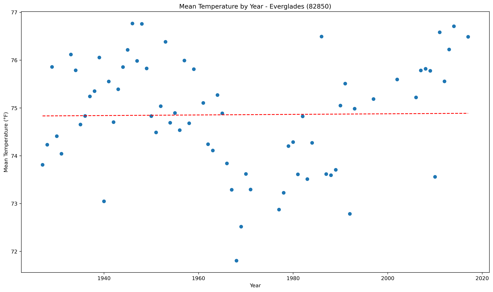
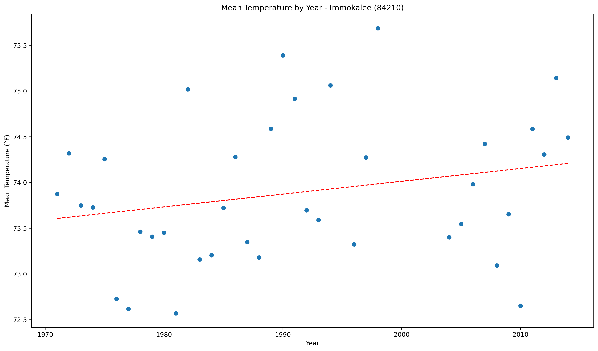
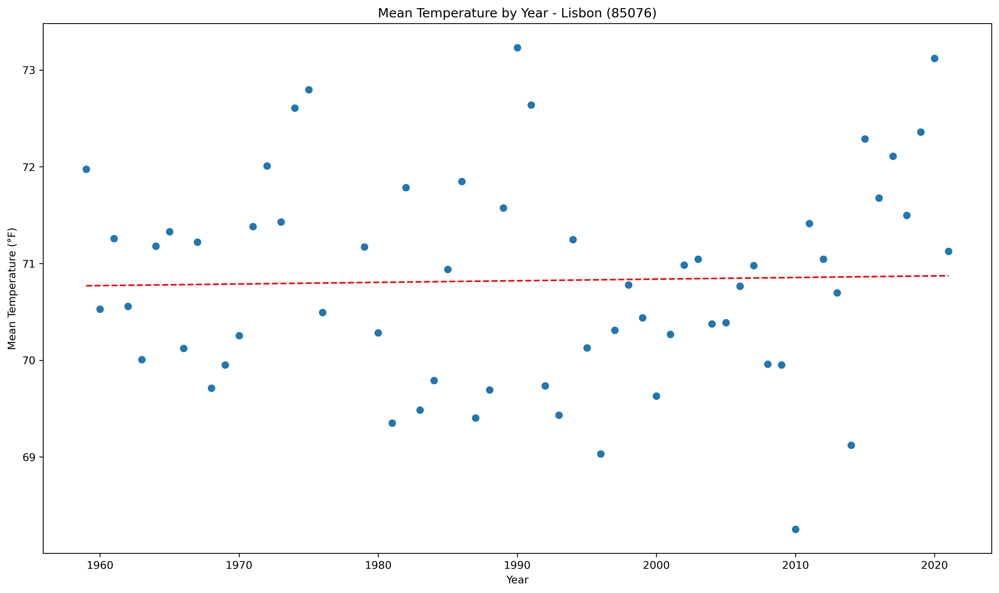
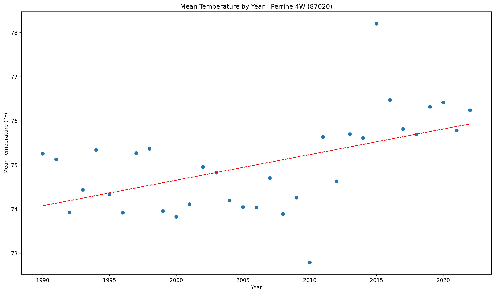
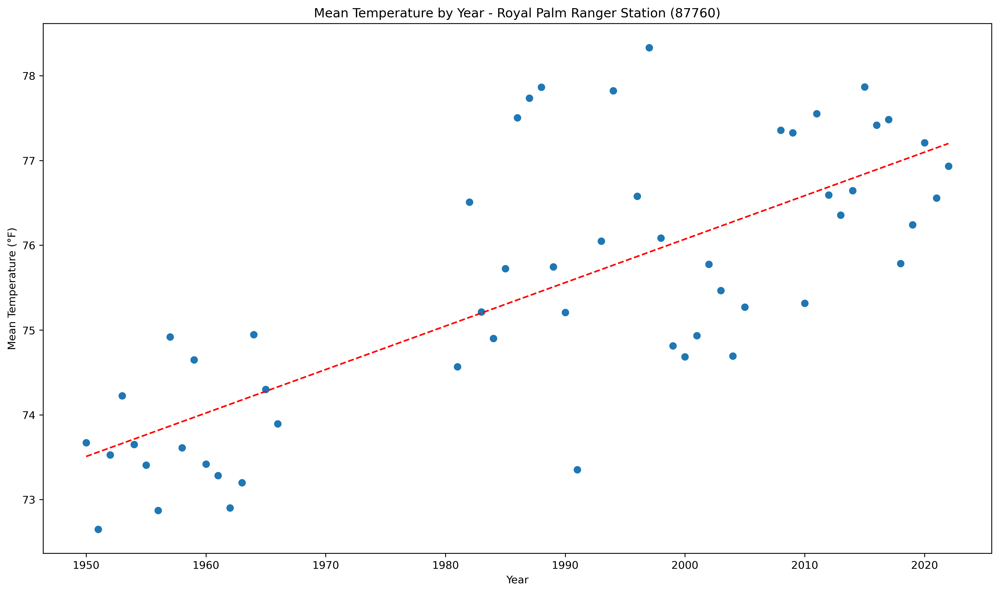

<!DOCTYPE html>
<html>
<head>
    
    <meta http-equiv="content-type" content="text/html; charset=UTF-8" />
    
        <script>
            L_NO_TOUCH = false;
            L_DISABLE_3D = false;
        </script>
    
    <style>html, body {width: 100%;height: 100%;margin: 0;padding: 0;}</style>
    <style>#map {position:absolute;top:0;bottom:0;right:0;left:0;}</style>
    <script src="https://cdn.jsdelivr.net/npm/leaflet@1.9.3/dist/leaflet.js"></script>
    <script src="https://code.jquery.com/jquery-1.12.4.min.js"></script>
    <script src="https://cdn.jsdelivr.net/npm/bootstrap@5.2.2/dist/js/bootstrap.bundle.min.js"></script>
    <script src="https://cdnjs.cloudflare.com/ajax/libs/Leaflet.awesome-markers/2.0.2/leaflet.awesome-markers.js"></script>
    <link rel="stylesheet" href="https://cdn.jsdelivr.net/npm/leaflet@1.9.3/dist/leaflet.css"/>
    <link rel="stylesheet" href="https://cdn.jsdelivr.net/npm/bootstrap@5.2.2/dist/css/bootstrap.min.css"/>
    <link rel="stylesheet" href="https://netdna.bootstrapcdn.com/bootstrap/3.0.0/css/bootstrap.min.css"/>
    <link rel="stylesheet" href="https://cdn.jsdelivr.net/npm/@fortawesome/fontawesome-free@6.2.0/css/all.min.css"/>
    <link rel="stylesheet" href="https://cdnjs.cloudflare.com/ajax/libs/Leaflet.awesome-markers/2.0.2/leaflet.awesome-markers.css"/>
    <link rel="stylesheet" href="https://cdn.jsdelivr.net/gh/python-visualization/folium/folium/templates/leaflet.awesome.rotate.min.css"/>
    
            <meta name="viewport" content="width=device-width,
                initial-scale=1.0, maximum-scale=1.0, user-scalable=no" />
            <style>
                #map_383802429e18c75425736a38ba906fb9 {
                    position: relative;
                    width: 100.0%;
                    height: 100.0%;
                    left: 0.0%;
                    top: 0.0%;
                }
                .leaflet-container { font-size: 1rem; }
            </style>
        
</head>
<body>
    
    
            <div class="folium-map" id="map_383802429e18c75425736a38ba906fb9" ></div>
        
</body>
<script>
    
    
            var map_383802429e18c75425736a38ba906fb9 = L.map(
                "map_383802429e18c75425736a38ba906fb9",
                {
                    center: [28.0, -82.5],
                    crs: L.CRS.EPSG3857,
                    zoom: 7,
                    zoomControl: false,
                    preferCanvas: false,
                }
            );

            

        
    
            var tile_layer_53dc3734cb918a4a7abfc743e72c7be9 = L.tileLayer(
                "https://cartodb-basemaps-{s}.global.ssl.fastly.net/dark_all/{z}/{x}/{y}.png",
                {"attribution": "\u0026copy; \u003ca target=\"_blank\" href=\"http://www.openstreetmap.org/copyright\"\u003eOpenStreetMap\u003c/a\u003e contributors \u0026copy; \u003ca target=\"_blank\" href=\"http://cartodb.com/attributions\"\u003eCartoDB\u003c/a\u003e, CartoDB \u003ca target=\"_blank\" href =\"http://cartodb.com/attributions\"\u003eattributions\u003c/a\u003e", "detectRetina": false, "maxNativeZoom": 18, "maxZoom": 18, "minZoom": 7, "noWrap": false, "opacity": 1, "subdomains": "abc", "tms": false}
            ).addTo(map_383802429e18c75425736a38ba906fb9);
        
    
            var marker_b04d03ac271cd0b8894e57f1525d9c05 = L.marker(
                [29.43, -85.1],
                {}
            ).addTo(map_383802429e18c75425736a38ba906fb9);
        
    
            var icon_fdb342efc445ed4824c104bdba219775 = L.AwesomeMarkers.icon(
                {"extraClasses": "fa-rotate-0", "icon": "info-sign", "iconColor": "white", "markerColor": "orange", "prefix": "glyphicon"}
            );
            marker_b04d03ac271cd0b8894e57f1525d9c05.setIcon(icon_fdb342efc445ed4824c104bdba219775);
        
    
        var popup_1fd5a56b37e37b1cdc5c5098c74735b5 = L.popup({"maxWidth": 1000, "minWidth": 500});

        
            
                var html_05d7c9e47f7423db708daa675084775f = $(`<div id="html_05d7c9e47f7423db708daa675084775f" style="width: 100.0%; height: 100.0%;"><b>Apalachicola AP (80211)</b><br>lat: 29.43, lon: -85.1<br><a href='../../static/img/plots/trends/meantemp_yearly/80211_mean_trend_yearly.png'></a></div>`)[0];
                popup_1fd5a56b37e37b1cdc5c5098c74735b5.setContent(html_05d7c9e47f7423db708daa675084775f);
            
        

        marker_b04d03ac271cd0b8894e57f1525d9c05.bindPopup(popup_1fd5a56b37e37b1cdc5c5098c74735b5)
        ;

        
    
    
            var marker_8cf0cb4eb1bc420be838efd5bd8c7530 = L.marker(
                [27.13, -81.52],
                {}
            ).addTo(map_383802429e18c75425736a38ba906fb9);
        
    
            var icon_2afafc51dea05208001d68f2edb31350 = L.AwesomeMarkers.icon(
                {"extraClasses": "fa-rotate-0", "icon": "info-sign", "iconColor": "white", "markerColor": "blue", "prefix": "glyphicon"}
            );
            marker_8cf0cb4eb1bc420be838efd5bd8c7530.setIcon(icon_2afafc51dea05208001d68f2edb31350);
        
    
        var popup_b04dafb293b6066b8e39189072173003 = L.popup({"maxWidth": 1000, "minWidth": 500});

        
            
                var html_eb7a66192e1b8d6c2b10aa1fa6d69f39 = $(`<div id="html_eb7a66192e1b8d6c2b10aa1fa6d69f39" style="width: 100.0%; height: 100.0%;"><b>Arcadia (80228)</b><br>lat: 27.13, lon: -81.52<br><a href='../../static/img/plots/trends/meantemp_yearly/80228_mean_trend_yearly.png'></a></div>`)[0];
                popup_b04dafb293b6066b8e39189072173003.setContent(html_eb7a66192e1b8d6c2b10aa1fa6d69f39);
            
        

        marker_8cf0cb4eb1bc420be838efd5bd8c7530.bindPopup(popup_b04dafb293b6066b8e39189072173003)
        ;

        
    
    
            var marker_7b24157eaaf1f4155f4aa6f557a62591 = L.marker(
                [27.1, -81.21],
                {}
            ).addTo(map_383802429e18c75425736a38ba906fb9);
        
    
            var icon_5128ca0339550098e70873abe951a3a9 = L.AwesomeMarkers.icon(
                {"extraClasses": "fa-rotate-0", "icon": "info-sign", "iconColor": "white", "markerColor": "orange", "prefix": "glyphicon"}
            );
            marker_7b24157eaaf1f4155f4aa6f557a62591.setIcon(icon_5128ca0339550098e70873abe951a3a9);
        
    
        var popup_c3de255eec299326e79c0ce6c0a8dab0 = L.popup({"maxWidth": 1000, "minWidth": 500});

        
            
                var html_d159ea3dceaed81a996ed0a736cb5d9b = $(`<div id="html_d159ea3dceaed81a996ed0a736cb5d9b" style="width: 100.0%; height: 100.0%;"><b>Archbold Bio Stn (80236)</b><br>lat: 27.1, lon: -81.21<br><a href='../../static/img/plots/trends/meantemp_yearly/80236_mean_trend_yearly.png'></a></div>`)[0];
                popup_c3de255eec299326e79c0ce6c0a8dab0.setContent(html_d159ea3dceaed81a996ed0a736cb5d9b);
            
        

        marker_7b24157eaaf1f4155f4aa6f557a62591.bindPopup(popup_c3de255eec299326e79c0ce6c0a8dab0)
        ;

        
    
    
            var marker_26ea9f3781816e69cc18b370040f3fe6 = L.marker(
                [27.35, -81.31],
                {}
            ).addTo(map_383802429e18c75425736a38ba906fb9);
        
    
            var icon_1558c626fe9889c8a2a72db47ca3f65c = L.AwesomeMarkers.icon(
                {"extraClasses": "fa-rotate-0", "icon": "info-sign", "iconColor": "white", "markerColor": "blue", "prefix": "glyphicon"}
            );
            marker_26ea9f3781816e69cc18b370040f3fe6.setIcon(icon_1558c626fe9889c8a2a72db47ca3f65c);
        
    
        var popup_4d50c0e6ead4d4db71d64c6ade38e3d5 = L.popup({"maxWidth": 1000, "minWidth": 500});

        
            
                var html_4c0a917989236cd557e691451fe5b26a = $(`<div id="html_4c0a917989236cd557e691451fe5b26a" style="width: 100.0%; height: 100.0%;"><b>Avon Park 2 W (80369)</b><br>lat: 27.35, lon: -81.31<br><a href='../../static/img/plots/trends/meantemp_yearly/80369_mean_trend_yearly.png'></a></div>`)[0];
                popup_4d50c0e6ead4d4db71d64c6ade38e3d5.setContent(html_4c0a917989236cd557e691451fe5b26a);
            
        

        marker_26ea9f3781816e69cc18b370040f3fe6.bindPopup(popup_4d50c0e6ead4d4db71d64c6ade38e3d5)
        ;

        
    
    
            var marker_06d58926263f494c5af5f2c5d6dcba1b = L.marker(
                [27.53, -81.5],
                {}
            ).addTo(map_383802429e18c75425736a38ba906fb9);
        
    
            var icon_5ab1e132e5c8c480e05baa06c033c2b8 = L.AwesomeMarkers.icon(
                {"extraClasses": "fa-rotate-0", "icon": "info-sign", "iconColor": "white", "markerColor": "orange", "prefix": "glyphicon"}
            );
            marker_06d58926263f494c5af5f2c5d6dcba1b.setIcon(icon_5ab1e132e5c8c480e05baa06c033c2b8);
        
    
        var popup_3a64bf32d20415fa54fb8b1130df6f58 = L.popup({"maxWidth": 1000, "minWidth": 500});

        
            
                var html_9299a78cc6e47f8292b08e94197ae72b = $(`<div id="html_9299a78cc6e47f8292b08e94197ae72b" style="width: 100.0%; height: 100.0%;"><b>Bartow (80478)</b><br>lat: 27.53, lon: -81.5<br><a href='../../static/img/plots/trends/meantemp_yearly/80478_mean_trend_yearly.png'></a></div>`)[0];
                popup_3a64bf32d20415fa54fb8b1130df6f58.setContent(html_9299a78cc6e47f8292b08e94197ae72b);
            
        

        marker_06d58926263f494c5af5f2c5d6dcba1b.bindPopup(popup_3a64bf32d20415fa54fb8b1130df6f58)
        ;

        
    
    
            var marker_4c2b337c401b575eadc4f48d59fc1e34 = L.marker(
                [26.41, -80.4],
                {}
            ).addTo(map_383802429e18c75425736a38ba906fb9);
        
    
            var icon_2d62c64d3960a32884f2ffb17a64799d = L.AwesomeMarkers.icon(
                {"extraClasses": "fa-rotate-0", "icon": "info-sign", "iconColor": "white", "markerColor": "orange", "prefix": "glyphicon"}
            );
            marker_4c2b337c401b575eadc4f48d59fc1e34.setIcon(icon_2d62c64d3960a32884f2ffb17a64799d);
        
    
        var popup_b0f7125202e91bc77ee7759f50f74cc2 = L.popup({"maxWidth": 1000, "minWidth": 500});

        
            
                var html_b79f5bf58933794abdbe29c991e43cfb = $(`<div id="html_b79f5bf58933794abdbe29c991e43cfb" style="width: 100.0%; height: 100.0%;"><b>Belle Glade (80611)</b><br>lat: 26.41, lon: -80.4<br><a href='../../static/img/plots/trends/meantemp_yearly/80611_mean_trend_yearly.png'></a></div>`)[0];
                popup_b0f7125202e91bc77ee7759f50f74cc2.setContent(html_b79f5bf58933794abdbe29c991e43cfb);
            
        

        marker_4c2b337c401b575eadc4f48d59fc1e34.bindPopup(popup_b0f7125202e91bc77ee7759f50f74cc2)
        ;

        
    
    
            var marker_e46997052ca9cbe05aac219d07a76bfc = L.marker(
                [27.26, -82.3],
                {}
            ).addTo(map_383802429e18c75425736a38ba906fb9);
        
    
            var icon_8aff8749e99e0ef5ea64d8f6a4902a95 = L.AwesomeMarkers.icon(
                {"extraClasses": "fa-rotate-0", "icon": "info-sign", "iconColor": "white", "markerColor": "red", "prefix": "glyphicon"}
            );
            marker_e46997052ca9cbe05aac219d07a76bfc.setIcon(icon_8aff8749e99e0ef5ea64d8f6a4902a95);
        
    
        var popup_e00b46dea5c2d88dc15d6ce39a784f9f = L.popup({"maxWidth": 1000, "minWidth": 500});

        
            
                var html_ccaed041f01f5885c8165360a9256f8e = $(`<div id="html_ccaed041f01f5885c8165360a9256f8e" style="width: 100.0%; height: 100.0%;"><b>Bradenton 5 ESE (80945)</b><br>lat: 27.26, lon: -82.3<br><a href='../../static/img/plots/trends/meantemp_yearly/80945_mean_trend_yearly.png'></a></div>`)[0];
                popup_e00b46dea5c2d88dc15d6ce39a784f9f.setContent(html_ccaed041f01f5885c8165360a9256f8e);
            
        

        marker_e46997052ca9cbe05aac219d07a76bfc.bindPopup(popup_e00b46dea5c2d88dc15d6ce39a784f9f)
        ;

        
    
    
            var marker_0174bf2e0e6424ea93fd3085251057c7 = L.marker(
                [28.36, -82.21],
                {}
            ).addTo(map_383802429e18c75425736a38ba906fb9);
        
    
            var icon_48ce82ebb8711e1fcd95db7cde7b98a6 = L.AwesomeMarkers.icon(
                {"extraClasses": "fa-rotate-0", "icon": "info-sign", "iconColor": "white", "markerColor": "orange", "prefix": "glyphicon"}
            );
            marker_0174bf2e0e6424ea93fd3085251057c7.setIcon(icon_48ce82ebb8711e1fcd95db7cde7b98a6);
        
    
        var popup_b282ff5b17667ba1876c4d74ddc78620 = L.popup({"maxWidth": 1000, "minWidth": 500});

        
            
                var html_68df4195b1eee2329dd0f12dbdd6c957 = $(`<div id="html_68df4195b1eee2329dd0f12dbdd6c957" style="width: 100.0%; height: 100.0%;"><b>Brooksville Chin Hill (81046)</b><br>lat: 28.36, lon: -82.21<br><a href='../../static/img/plots/trends/meantemp_yearly/81046_mean_trend_yearly.png'></a></div>`)[0];
                popup_b282ff5b17667ba1876c4d74ddc78620.setContent(html_68df4195b1eee2329dd0f12dbdd6c957);
            
        

        marker_0174bf2e0e6424ea93fd3085251057c7.bindPopup(popup_b282ff5b17667ba1876c4d74ddc78620)
        ;

        
    
    
            var marker_d05f0d6f1ba168f1da1c6c4e081c385b = L.marker(
                [28.39, -82.4],
                {}
            ).addTo(map_383802429e18c75425736a38ba906fb9);
        
    
            var icon_052d5c5589bac89abbadc16d22911299 = L.AwesomeMarkers.icon(
                {"extraClasses": "fa-rotate-0", "icon": "info-sign", "iconColor": "white", "markerColor": "orange", "prefix": "glyphicon"}
            );
            marker_d05f0d6f1ba168f1da1c6c4e081c385b.setIcon(icon_052d5c5589bac89abbadc16d22911299);
        
    
        var popup_e9ab8e4de570c980cc0ee80ae7fe8241 = L.popup({"maxWidth": 1000, "minWidth": 500});

        
            
                var html_45c0502b1f02f5d8683053c7edad7167 = $(`<div id="html_45c0502b1f02f5d8683053c7edad7167" style="width: 100.0%; height: 100.0%;"><b>Bushnell 1 E (81163)</b><br>lat: 28.39, lon: -82.4<br><a href='../../static/img/plots/trends/meantemp_yearly/81163_mean_trend_yearly.png'></a></div>`)[0];
                popup_e9ab8e4de570c980cc0ee80ae7fe8241.setContent(html_45c0502b1f02f5d8683053c7edad7167);
            
        

        marker_d05f0d6f1ba168f1da1c6c4e081c385b.bindPopup(popup_e9ab8e4de570c980cc0ee80ae7fe8241)
        ;

        
    
    
            var marker_1d06fb8c3d277e7034158ef45434e1f7 = L.marker(
                [26.51, -80.37],
                {}
            ).addTo(map_383802429e18c75425736a38ba906fb9);
        
    
            var icon_f125ca7782751620c632ae9319397f39 = L.AwesomeMarkers.icon(
                {"extraClasses": "fa-rotate-0", "icon": "info-sign", "iconColor": "white", "markerColor": "red", "prefix": "glyphicon"}
            );
            marker_1d06fb8c3d277e7034158ef45434e1f7.setIcon(icon_f125ca7782751620c632ae9319397f39);
        
    
        var popup_9d79d3d707a199139ba2a4b500187c54 = L.popup({"maxWidth": 1000, "minWidth": 500});

        
            
                var html_6b8aa10a39d90d60b6e631a90364a58d = $(`<div id="html_6b8aa10a39d90d60b6e631a90364a58d" style="width: 100.0%; height: 100.0%;"><b>Canal Point USDA (81276)</b><br>lat: 26.51, lon: -80.37<br><a href='../../static/img/plots/trends/meantemp_yearly/81276_mean_trend_yearly.png'></a></div>`)[0];
                popup_9d79d3d707a199139ba2a4b500187c54.setContent(html_6b8aa10a39d90d60b6e631a90364a58d);
            
        

        marker_1d06fb8c3d277e7034158ef45434e1f7.bindPopup(popup_9d79d3d707a199139ba2a4b500187c54)
        ;

        
    
    
            var marker_08a1ce0a2ef4d11216824a62ee905ac4 = L.marker(
                [30.47, -85.29],
                {}
            ).addTo(map_383802429e18c75425736a38ba906fb9);
        
    
            var icon_8ffe361895df013800bcceec0abc12b9 = L.AwesomeMarkers.icon(
                {"extraClasses": "fa-rotate-0", "icon": "info-sign", "iconColor": "white", "markerColor": "blue", "prefix": "glyphicon"}
            );
            marker_08a1ce0a2ef4d11216824a62ee905ac4.setIcon(icon_8ffe361895df013800bcceec0abc12b9);
        
    
        var popup_14ac8f65145d02b8fccea30baaa4a0ea = L.popup({"maxWidth": 1000, "minWidth": 500});

        
            
                var html_fc546672179754e12f734d543e620283 = $(`<div id="html_fc546672179754e12f734d543e620283" style="width: 100.0%; height: 100.0%;"><b>Chipley (81544)</b><br>lat: 30.47, lon: -85.29<br><a href='../../static/img/plots/trends/meantemp_yearly/81544_mean_trend_yearly.png'></a></div>`)[0];
                popup_14ac8f65145d02b8fccea30baaa4a0ea.setContent(html_fc546672179754e12f734d543e620283);
            
        

        marker_08a1ce0a2ef4d11216824a62ee905ac4.bindPopup(popup_14ac8f65145d02b8fccea30baaa4a0ea)
        ;

        
    
    
            var marker_cc17187ebad711ad15525b27a2d793d2 = L.marker(
                [28.27, -81.43],
                {}
            ).addTo(map_383802429e18c75425736a38ba906fb9);
        
    
            var icon_8cb29546d00f004805a51df281e39430 = L.AwesomeMarkers.icon(
                {"extraClasses": "fa-rotate-0", "icon": "info-sign", "iconColor": "white", "markerColor": "orange", "prefix": "glyphicon"}
            );
            marker_cc17187ebad711ad15525b27a2d793d2.setIcon(icon_8cb29546d00f004805a51df281e39430);
        
    
        var popup_31722eda0ceab1586cd974c9ea1bd3ad = L.popup({"maxWidth": 1000, "minWidth": 500});

        
            
                var html_b70a68ed633131ea16673c67ab53d6f8 = $(`<div id="html_b70a68ed633131ea16673c67ab53d6f8" style="width: 100.0%; height: 100.0%;"><b>Clermont 9 S (81641)</b><br>lat: 28.27, lon: -81.43<br><a href='../../static/img/plots/trends/meantemp_yearly/81641_mean_trend_yearly.png'></a></div>`)[0];
                popup_31722eda0ceab1586cd974c9ea1bd3ad.setContent(html_b70a68ed633131ea16673c67ab53d6f8);
            
        

        marker_cc17187ebad711ad15525b27a2d793d2.bindPopup(popup_31722eda0ceab1586cd974c9ea1bd3ad)
        ;

        
    
    
            var marker_4c18f9d3d8b7f647f1fe9acbf5c3b7bb = L.marker(
                [29.25, -81.31],
                {}
            ).addTo(map_383802429e18c75425736a38ba906fb9);
        
    
            var icon_e941a0750384346caf60c2b66102c1cb = L.AwesomeMarkers.icon(
                {"extraClasses": "fa-rotate-0", "icon": "info-sign", "iconColor": "white", "markerColor": "blue", "prefix": "glyphicon"}
            );
            marker_4c18f9d3d8b7f647f1fe9acbf5c3b7bb.setIcon(icon_e941a0750384346caf60c2b66102c1cb);
        
    
        var popup_c21eb8fdb2ee3b48bd57f4c358601536 = L.popup({"maxWidth": 1000, "minWidth": 500});

        
            
                var html_dd7583bc3aff9594d524195aa6d318f2 = $(`<div id="html_dd7583bc3aff9594d524195aa6d318f2" style="width: 100.0%; height: 100.0%;"><b>Crescent City (81978)</b><br>lat: 29.25, lon: -81.31<br><a href='../../static/img/plots/trends/meantemp_yearly/81978_mean_trend_yearly.png'></a></div>`)[0];
                popup_c21eb8fdb2ee3b48bd57f4c358601536.setContent(html_dd7583bc3aff9594d524195aa6d318f2);
            
        

        marker_4c18f9d3d8b7f647f1fe9acbf5c3b7bb.bindPopup(popup_c21eb8fdb2ee3b48bd57f4c358601536)
        ;

        
    
    
            var marker_82f50258d2f2595b245c09b7b62a6d6b = L.marker(
                [30.78, -86.52],
                {}
            ).addTo(map_383802429e18c75425736a38ba906fb9);
        
    
            var icon_75f4243847ae2a2f84c2476623eac851 = L.AwesomeMarkers.icon(
                {"extraClasses": "fa-rotate-0", "icon": "info-sign", "iconColor": "white", "markerColor": "orange", "prefix": "glyphicon"}
            );
            marker_82f50258d2f2595b245c09b7b62a6d6b.setIcon(icon_75f4243847ae2a2f84c2476623eac851);
        
    
        var popup_f56a959c2def5e71e8c6b60e30fd1d62 = L.popup({"maxWidth": 1000, "minWidth": 500});

        
            
                var html_6decb6cc6e27f8085ba714d68a5c8192 = $(`<div id="html_6decb6cc6e27f8085ba714d68a5c8192" style="width: 100.0%; height: 100.0%;"><b>Crestview Bob Sikes Airport (81986)</b><br>lat: 30.78, lon: -86.52<br><a href='../../static/img/plots/trends/meantemp_yearly/81986_mean_trend_yearly.png'></a></div>`)[0];
                popup_f56a959c2def5e71e8c6b60e30fd1d62.setContent(html_6decb6cc6e27f8085ba714d68a5c8192);
            
        

        marker_82f50258d2f2595b245c09b7b62a6d6b.bindPopup(popup_f56a959c2def5e71e8c6b60e30fd1d62)
        ;

        
    
    
            var marker_32139359a4b271527e552516863fc5c9 = L.marker(
                [29.38, -83.9],
                {}
            ).addTo(map_383802429e18c75425736a38ba906fb9);
        
    
            var icon_66bfe31cf2e3d296ed2ed29126d95fcd = L.AwesomeMarkers.icon(
                {"extraClasses": "fa-rotate-0", "icon": "info-sign", "iconColor": "white", "markerColor": "blue", "prefix": "glyphicon"}
            );
            marker_32139359a4b271527e552516863fc5c9.setIcon(icon_66bfe31cf2e3d296ed2ed29126d95fcd);
        
    
        var popup_6f19c3ea8442a35fabd28d0fb094ba4c = L.popup({"maxWidth": 1000, "minWidth": 500});

        
            
                var html_8cc25a16f793f90c4f34d655f11576d0 = $(`<div id="html_8cc25a16f793f90c4f34d655f11576d0" style="width: 100.0%; height: 100.0%;"><b>Cross City 1 E (82008)</b><br>lat: 29.38, lon: -83.9<br><a href='../../static/img/plots/trends/meantemp_yearly/82008_mean_trend_yearly.png'></a></div>`)[0];
                popup_6f19c3ea8442a35fabd28d0fb094ba4c.setContent(html_8cc25a16f793f90c4f34d655f11576d0);
            
        

        marker_32139359a4b271527e552516863fc5c9.bindPopup(popup_6f19c3ea8442a35fabd28d0fb094ba4c)
        ;

        
    
    
            var marker_d3a90ea6f9941388711d4ee8aed64338 = L.marker(
                [29.11, -81.04],
                {}
            ).addTo(map_383802429e18c75425736a38ba906fb9);
        
    
            var icon_23b3938cf72c73d0341a8fbe934effac = L.AwesomeMarkers.icon(
                {"extraClasses": "fa-rotate-0", "icon": "info-sign", "iconColor": "white", "markerColor": "orange", "prefix": "glyphicon"}
            );
            marker_d3a90ea6f9941388711d4ee8aed64338.setIcon(icon_23b3938cf72c73d0341a8fbe934effac);
        
    
        var popup_d23638509f0a11b222b7566ac34a730e = L.popup({"maxWidth": 1000, "minWidth": 500});

        
            
                var html_031200893758b2676e3027b289a5d791 = $(`<div id="html_031200893758b2676e3027b289a5d791" style="width: 100.0%; height: 100.0%;"><b>Daytona Beach (82150)</b><br>lat: 29.11, lon: -81.04<br><a href='../../static/img/plots/trends/meantemp_yearly/82150_mean_trend_yearly.png'></a></div>`)[0];
                popup_d23638509f0a11b222b7566ac34a730e.setContent(html_031200893758b2676e3027b289a5d791);
            
        

        marker_d3a90ea6f9941388711d4ee8aed64338.bindPopup(popup_d23638509f0a11b222b7566ac34a730e)
        ;

        
    
    
            var marker_eea5280989ff9db6fe3bb15ea8bad4de = L.marker(
                [29.1, -81.2],
                {}
            ).addTo(map_383802429e18c75425736a38ba906fb9);
        
    
            var icon_be74b92ad6ae4cd33618dbd268dccab2 = L.AwesomeMarkers.icon(
                {"extraClasses": "fa-rotate-0", "icon": "info-sign", "iconColor": "white", "markerColor": "orange", "prefix": "glyphicon"}
            );
            marker_eea5280989ff9db6fe3bb15ea8bad4de.setIcon(icon_be74b92ad6ae4cd33618dbd268dccab2);
        
    
        var popup_f551c2d8fe98a381805e6c246d22cc78 = L.popup({"maxWidth": 1000, "minWidth": 500});

        
            
                var html_9941610c9f7327fb87057eacda1725a1 = $(`<div id="html_9941610c9f7327fb87057eacda1725a1" style="width: 100.0%; height: 100.0%;"><b>Daytona Beach Intl Airport (82158)</b><br>lat: 29.1, lon: -81.2<br><a href='../../static/img/plots/trends/meantemp_yearly/82158_mean_trend_yearly.png'></a></div>`)[0];
                popup_f551c2d8fe98a381805e6c246d22cc78.setContent(html_9941610c9f7327fb87057eacda1725a1);
            
        

        marker_eea5280989ff9db6fe3bb15ea8bad4de.bindPopup(popup_f551c2d8fe98a381805e6c246d22cc78)
        ;

        
    
    
            var marker_ac769cdbc35b9caaf270c76a8bef2b9b = L.marker(
                [30.43, -86.5],
                {}
            ).addTo(map_383802429e18c75425736a38ba906fb9);
        
    
            var icon_8101cf9f6d30924adc2a643043a63df3 = L.AwesomeMarkers.icon(
                {"extraClasses": "fa-rotate-0", "icon": "info-sign", "iconColor": "white", "markerColor": "blue", "prefix": "glyphicon"}
            );
            marker_ac769cdbc35b9caaf270c76a8bef2b9b.setIcon(icon_8101cf9f6d30924adc2a643043a63df3);
        
    
        var popup_2c10fe338d8576d8b72fc05c3e4e4d98 = L.popup({"maxWidth": 1000, "minWidth": 500});

        
            
                var html_512d2e89e333851b669903c0ae76a990 = $(`<div id="html_512d2e89e333851b669903c0ae76a990" style="width: 100.0%; height: 100.0%;"><b>De Funiak Springs 1 E (82220)</b><br>lat: 30.43, lon: -86.5<br><a href='../../static/img/plots/trends/meantemp_yearly/82220_mean_trend_yearly.png'></a></div>`)[0];
                popup_2c10fe338d8576d8b72fc05c3e4e4d98.setContent(html_512d2e89e333851b669903c0ae76a990);
            
        

        marker_ac769cdbc35b9caaf270c76a8bef2b9b.bindPopup(popup_2c10fe338d8576d8b72fc05c3e4e4d98)
        ;

        
    
    
            var marker_1abaf43feb63171ad2653250e6c77cb1 = L.marker(
                [29.1, -81.81],
                {}
            ).addTo(map_383802429e18c75425736a38ba906fb9);
        
    
            var icon_53668bbdd66fbb99c2a7941825b8cb24 = L.AwesomeMarkers.icon(
                {"extraClasses": "fa-rotate-0", "icon": "info-sign", "iconColor": "white", "markerColor": "blue", "prefix": "glyphicon"}
            );
            marker_1abaf43feb63171ad2653250e6c77cb1.setIcon(icon_53668bbdd66fbb99c2a7941825b8cb24);
        
    
        var popup_1d5eabde45b059d1989a2abdfe3642e7 = L.popup({"maxWidth": 1000, "minWidth": 500});

        
            
                var html_ac845801c53591b3dfad96d125d2af82 = $(`<div id="html_ac845801c53591b3dfad96d125d2af82" style="width: 100.0%; height: 100.0%;"><b>Deland 1 SSE (82229)</b><br>lat: 29.1, lon: -81.81<br><a href='../../static/img/plots/trends/meantemp_yearly/82229_mean_trend_yearly.png'></a></div>`)[0];
                popup_1d5eabde45b059d1989a2abdfe3642e7.setContent(html_ac845801c53591b3dfad96d125d2af82);
            
        

        marker_1abaf43feb63171ad2653250e6c77cb1.bindPopup(popup_1d5eabde45b059d1989a2abdfe3642e7)
        ;

        
    
    
            var marker_fa4c0f42976e04276cde005951be6ccf = L.marker(
                [26.44, -81.02],
                {}
            ).addTo(map_383802429e18c75425736a38ba906fb9);
        
    
            var icon_8121b77cfa0e5f67c98a7a392efde3cc = L.AwesomeMarkers.icon(
                {"extraClasses": "fa-rotate-0", "icon": "info-sign", "iconColor": "white", "markerColor": "orange", "prefix": "glyphicon"}
            );
            marker_fa4c0f42976e04276cde005951be6ccf.setIcon(icon_8121b77cfa0e5f67c98a7a392efde3cc);
        
    
        var popup_e0e31bc33080dd0e76a7a65ffd15c92a = L.popup({"maxWidth": 1000, "minWidth": 500});

        
            
                var html_e3fe7bad144bd68535bc55f23012874e = $(`<div id="html_e3fe7bad144bd68535bc55f23012874e" style="width: 100.0%; height: 100.0%;"><b>Devils Garden (82298)</b><br>lat: 26.44, lon: -81.02<br><a href='../../static/img/plots/trends/meantemp_yearly/82298_mean_trend_yearly.png'></a></div>`)[0];
                popup_e0e31bc33080dd0e76a7a65ffd15c92a.setContent(html_e3fe7bad144bd68535bc55f23012874e);
            
        

        marker_fa4c0f42976e04276cde005951be6ccf.bindPopup(popup_e0e31bc33080dd0e76a7a65ffd15c92a)
        ;

        
    
    
            var marker_864b4908aaf4dd3cc6a5fc6541173f8a = L.marker(
                [25.5, -81.23],
                {}
            ).addTo(map_383802429e18c75425736a38ba906fb9);
        
    
            var icon_4f037fafe093530fef51b9f39fcdc6e2 = L.AwesomeMarkers.icon(
                {"extraClasses": "fa-rotate-0", "icon": "info-sign", "iconColor": "white", "markerColor": "blue", "prefix": "glyphicon"}
            );
            marker_864b4908aaf4dd3cc6a5fc6541173f8a.setIcon(icon_4f037fafe093530fef51b9f39fcdc6e2);
        
    
        var popup_f56c933734d33b64716bf492626e95d4 = L.popup({"maxWidth": 1000, "minWidth": 500});

        
            
                var html_417f30d39406b1d41ded0261be477398 = $(`<div id="html_417f30d39406b1d41ded0261be477398" style="width: 100.0%; height: 100.0%;"><b>Everglades (82850)</b><br>lat: 25.5, lon: -81.23<br><a href='../../static/img/plots/trends/meantemp_yearly/82850_mean_trend_yearly.png'></a></div>`)[0];
                popup_f56c933734d33b64716bf492626e95d4.setContent(html_417f30d39406b1d41ded0261be477398);
            
        

        marker_864b4908aaf4dd3cc6a5fc6541173f8a.bindPopup(popup_f56c933734d33b64716bf492626e95d4)
        ;

        
    
    
            var marker_430820d440a6e55b87057cc87e890250 = L.marker(
                [29.45, -81.32],
                {}
            ).addTo(map_383802429e18c75425736a38ba906fb9);
        
    
            var icon_f368fdbcf230db8d1bb5abd1ba371c76 = L.AwesomeMarkers.icon(
                {"extraClasses": "fa-rotate-0", "icon": "info-sign", "iconColor": "white", "markerColor": "orange", "prefix": "glyphicon"}
            );
            marker_430820d440a6e55b87057cc87e890250.setIcon(icon_f368fdbcf230db8d1bb5abd1ba371c76);
        
    
        var popup_38842f99e73389190e7a48ef81f572c5 = L.popup({"maxWidth": 1000, "minWidth": 500});

        
            
                var html_303ec60275929106c5280046cf5e71a5 = $(`<div id="html_303ec60275929106c5280046cf5e71a5" style="width: 100.0%; height: 100.0%;"><b>Federal Point (82915)</b><br>lat: 29.45, lon: -81.32<br><a href='../../static/img/plots/trends/meantemp_yearly/82915_mean_trend_yearly.png'></a></div>`)[0];
                popup_38842f99e73389190e7a48ef81f572c5.setContent(html_303ec60275929106c5280046cf5e71a5);
            
        

        marker_430820d440a6e55b87057cc87e890250.bindPopup(popup_38842f99e73389190e7a48ef81f572c5)
        ;

        
    
    
            var marker_99b27a012c82d212fe35b23824e9d19d = L.marker(
                [30.39, -81.27],
                {}
            ).addTo(map_383802429e18c75425736a38ba906fb9);
        
    
            var icon_1424e74d8f5c99fec8d83321fd3e5a4d = L.AwesomeMarkers.icon(
                {"extraClasses": "fa-rotate-0", "icon": "info-sign", "iconColor": "white", "markerColor": "blue", "prefix": "glyphicon"}
            );
            marker_99b27a012c82d212fe35b23824e9d19d.setIcon(icon_1424e74d8f5c99fec8d83321fd3e5a4d);
        
    
        var popup_314c6454be78b6bce4c4f4cfe7295d4e = L.popup({"maxWidth": 1000, "minWidth": 500});

        
            
                var html_098d453635baa6da209efff1d656c03e = $(`<div id="html_098d453635baa6da209efff1d656c03e" style="width: 100.0%; height: 100.0%;"><b>Fernandina Beach (82944)</b><br>lat: 30.39, lon: -81.27<br><a href='../../static/img/plots/trends/meantemp_yearly/82944_mean_trend_yearly.png'></a></div>`)[0];
                popup_314c6454be78b6bce4c4f4cfe7295d4e.setContent(html_098d453635baa6da209efff1d656c03e);
            
        

        marker_99b27a012c82d212fe35b23824e9d19d.bindPopup(popup_314c6454be78b6bce4c4f4cfe7295d4e)
        ;

        
    
    
            var marker_fea9df7864f9a5348f6969efc6aaaa6d = L.marker(
                [25.8, -80.54],
                {}
            ).addTo(map_383802429e18c75425736a38ba906fb9);
        
    
            var icon_fa1815926bb9cceaede3728ff42a1e34 = L.AwesomeMarkers.icon(
                {"extraClasses": "fa-rotate-0", "icon": "info-sign", "iconColor": "white", "markerColor": "red", "prefix": "glyphicon"}
            );
            marker_fea9df7864f9a5348f6969efc6aaaa6d.setIcon(icon_fa1815926bb9cceaede3728ff42a1e34);
        
    
        var popup_9e937e6016190b181b484eb4b08e292a = L.popup({"maxWidth": 1000, "minWidth": 500});

        
            
                var html_f1adecf18dbb6907c6a49808047a4fc0 = $(`<div id="html_f1adecf18dbb6907c6a49808047a4fc0" style="width: 100.0%; height: 100.0%;"><b>Flamingo Ranger Station (83020)</b><br>lat: 25.8, lon: -80.54<br><a href='../../static/img/plots/trends/meantemp_yearly/83020_mean_trend_yearly.png'></a></div>`)[0];
                popup_9e937e6016190b181b484eb4b08e292a.setContent(html_f1adecf18dbb6907c6a49808047a4fc0);
            
        

        marker_fea9df7864f9a5348f6969efc6aaaa6d.bindPopup(popup_9e937e6016190b181b484eb4b08e292a)
        ;

        
    
    
            var marker_be7da1e0ad6e711c1f7c21e484f88280 = L.marker(
                [27.31, -80.49],
                {}
            ).addTo(map_383802429e18c75425736a38ba906fb9);
        
    
            var icon_6c139a55312f88e21d203a0994e493b4 = L.AwesomeMarkers.icon(
                {"extraClasses": "fa-rotate-0", "icon": "info-sign", "iconColor": "white", "markerColor": "blue", "prefix": "glyphicon"}
            );
            marker_be7da1e0ad6e711c1f7c21e484f88280.setIcon(icon_6c139a55312f88e21d203a0994e493b4);
        
    
        var popup_cd8638d1c737edec4cb566e1f9cb1e17 = L.popup({"maxWidth": 1000, "minWidth": 500});

        
            
                var html_1955fa0c039a8ca7c6a3984356bfb55f = $(`<div id="html_1955fa0c039a8ca7c6a3984356bfb55f" style="width: 100.0%; height: 100.0%;"><b>Fort Drum (83137)</b><br>lat: 27.31, lon: -80.49<br><a href='../../static/img/plots/trends/meantemp_yearly/83137_mean_trend_yearly.png'></a></div>`)[0];
                popup_cd8638d1c737edec4cb566e1f9cb1e17.setContent(html_1955fa0c039a8ca7c6a3984356bfb55f);
            
        

        marker_be7da1e0ad6e711c1f7c21e484f88280.bindPopup(popup_cd8638d1c737edec4cb566e1f9cb1e17)
        ;

        
    
    
            var marker_83598089341f85739a58031bdfecfe57 = L.marker(
                [27.61, -81.94],
                {}
            ).addTo(map_383802429e18c75425736a38ba906fb9);
        
    
            var icon_3806d56dbd84b4706e0d33a4d65467f7 = L.AwesomeMarkers.icon(
                {"extraClasses": "fa-rotate-0", "icon": "info-sign", "iconColor": "white", "markerColor": "red", "prefix": "glyphicon"}
            );
            marker_83598089341f85739a58031bdfecfe57.setIcon(icon_3806d56dbd84b4706e0d33a4d65467f7);
        
    
        var popup_0eddf012ca2fdf1bc8b7a56966d46a60 = L.popup({"maxWidth": 1000, "minWidth": 500});

        
            
                var html_e0e144d3bc656478892d7fe456ef14ca = $(`<div id="html_e0e144d3bc656478892d7fe456ef14ca" style="width: 100.0%; height: 100.0%;"><b>Ft Green 12 WSW (83153)</b><br>lat: 27.61, lon: -81.94<br><a href='../../static/img/plots/trends/meantemp_yearly/83153_mean_trend_yearly.png'></a></div>`)[0];
                popup_0eddf012ca2fdf1bc8b7a56966d46a60.setContent(html_e0e144d3bc656478892d7fe456ef14ca);
            
        

        marker_83598089341f85739a58031bdfecfe57.bindPopup(popup_0eddf012ca2fdf1bc8b7a56966d46a60)
        ;

        
    
    
            var marker_d53ad8f1b4227a923d1673e8727bbf9a = L.marker(
                [26.6, -80.12],
                {}
            ).addTo(map_383802429e18c75425736a38ba906fb9);
        
    
            var icon_ceb632f3f6e67613a7867b1d96ae0275 = L.AwesomeMarkers.icon(
                {"extraClasses": "fa-rotate-0", "icon": "info-sign", "iconColor": "white", "markerColor": "orange", "prefix": "glyphicon"}
            );
            marker_d53ad8f1b4227a923d1673e8727bbf9a.setIcon(icon_ceb632f3f6e67613a7867b1d96ae0275);
        
    
        var popup_110c813ad8e77e41532a41de71bf5068 = L.popup({"maxWidth": 1000, "minWidth": 500});

        
            
                var html_6f5789b534389e5406f61fc0c07f8fb9 = $(`<div id="html_6f5789b534389e5406f61fc0c07f8fb9" style="width: 100.0%; height: 100.0%;"><b>Ft Lauderdale (83163)</b><br>lat: 26.6, lon: -80.12<br><a href='../../static/img/plots/trends/meantemp_yearly/83163_mean_trend_yearly.png'></a></div>`)[0];
                popup_110c813ad8e77e41532a41de71bf5068.setContent(html_6f5789b534389e5406f61fc0c07f8fb9);
            
        

        marker_d53ad8f1b4227a923d1673e8727bbf9a.bindPopup(popup_110c813ad8e77e41532a41de71bf5068)
        ;

        
    
    
            var marker_20392fe68b047f46455fd3a3a8a3f990 = L.marker(
                [26.07, -80.15],
                {}
            ).addTo(map_383802429e18c75425736a38ba906fb9);
        
    
            var icon_e05bb023b66ed5be154c09870558685d = L.AwesomeMarkers.icon(
                {"extraClasses": "fa-rotate-0", "icon": "info-sign", "iconColor": "white", "markerColor": "orange", "prefix": "glyphicon"}
            );
            marker_20392fe68b047f46455fd3a3a8a3f990.setIcon(icon_e05bb023b66ed5be154c09870558685d);
        
    
        var popup_42d03aa6760a9db9421b7e1d14cf87c3 = L.popup({"maxWidth": 1000, "minWidth": 500});

        
            
                var html_aa18e09421d5c96ae2c48c5c2c94ce90 = $(`<div id="html_aa18e09421d5c96ae2c48c5c2c94ce90" style="width: 100.0%; height: 100.0%;"><b>Ft Lauderdale Beach (83168)</b><br>lat: 26.07, lon: -80.15<br><a href='../../static/img/plots/trends/meantemp_yearly/83168_mean_trend_yearly.png'></a></div>`)[0];
                popup_42d03aa6760a9db9421b7e1d14cf87c3.setContent(html_aa18e09421d5c96ae2c48c5c2c94ce90);
            
        

        marker_20392fe68b047f46455fd3a3a8a3f990.bindPopup(popup_42d03aa6760a9db9421b7e1d14cf87c3)
        ;

        
    
    
            var marker_05550d96d42f4e5b03907a3a601169e1 = L.marker(
                [26.35, -81.51],
                {}
            ).addTo(map_383802429e18c75425736a38ba906fb9);
        
    
            var icon_8a7ea03f4e609a43e565d34530a922d3 = L.AwesomeMarkers.icon(
                {"extraClasses": "fa-rotate-0", "icon": "info-sign", "iconColor": "white", "markerColor": "orange", "prefix": "glyphicon"}
            );
            marker_05550d96d42f4e5b03907a3a601169e1.setIcon(icon_8a7ea03f4e609a43e565d34530a922d3);
        
    
        var popup_5cbe4a482b2ae450778de221f5f72161 = L.popup({"maxWidth": 1000, "minWidth": 500});

        
            
                var html_ea7ddfa8ad1cc36f49afb150edc5e57e = $(`<div id="html_ea7ddfa8ad1cc36f49afb150edc5e57e" style="width: 100.0%; height: 100.0%;"><b>Ft Myers Page FLD AP (83186)</b><br>lat: 26.35, lon: -81.51<br><a href='../../static/img/plots/trends/meantemp_yearly/83186_mean_trend_yearly.png'></a></div>`)[0];
                popup_5cbe4a482b2ae450778de221f5f72161.setContent(html_ea7ddfa8ad1cc36f49afb150edc5e57e);
            
        

        marker_05550d96d42f4e5b03907a3a601169e1.bindPopup(popup_5cbe4a482b2ae450778de221f5f72161)
        ;

        
    
    
            var marker_4e3c568079880696b5b01d57274441a4 = L.marker(
                [27.27, -80.21],
                {}
            ).addTo(map_383802429e18c75425736a38ba906fb9);
        
    
            var icon_5a34b4b1da38299c23d482482e63c340 = L.AwesomeMarkers.icon(
                {"extraClasses": "fa-rotate-0", "icon": "info-sign", "iconColor": "white", "markerColor": "blue", "prefix": "glyphicon"}
            );
            marker_4e3c568079880696b5b01d57274441a4.setIcon(icon_5a34b4b1da38299c23d482482e63c340);
        
    
        var popup_9ca6202ca486c0a242beed5fb9dc1c86 = L.popup({"maxWidth": 1000, "minWidth": 500});

        
            
                var html_a87ab39974be004ffe6b2f75aa296915 = $(`<div id="html_a87ab39974be004ffe6b2f75aa296915" style="width: 100.0%; height: 100.0%;"><b>Ft Pierce (83207)</b><br>lat: 27.27, lon: -80.21<br><a href='../../static/img/plots/trends/meantemp_yearly/83207_mean_trend_yearly.png'></a></div>`)[0];
                popup_9ca6202ca486c0a242beed5fb9dc1c86.setContent(html_a87ab39974be004ffe6b2f75aa296915);
            
        

        marker_4e3c568079880696b5b01d57274441a4.bindPopup(popup_9ca6202ca486c0a242beed5fb9dc1c86)
        ;

        
    
    
            var marker_8f08cb2640f829782aa7f0868439ea71 = L.marker(
                [29.41, -82.16],
                {}
            ).addTo(map_383802429e18c75425736a38ba906fb9);
        
    
            var icon_21e257542a1e637b4c4fbd6cce7d55b2 = L.AwesomeMarkers.icon(
                {"extraClasses": "fa-rotate-0", "icon": "info-sign", "iconColor": "white", "markerColor": "orange", "prefix": "glyphicon"}
            );
            marker_8f08cb2640f829782aa7f0868439ea71.setIcon(icon_21e257542a1e637b4c4fbd6cce7d55b2);
        
    
        var popup_9f27eb70b12983a09b40b7de0c73090d = L.popup({"maxWidth": 1000, "minWidth": 500});

        
            
                var html_ab714a53665243020461320f46308204 = $(`<div id="html_ab714a53665243020461320f46308204" style="width: 100.0%; height: 100.0%;"><b>Gainesville Regional AP (83326)</b><br>lat: 29.41, lon: -82.16<br><a href='../../static/img/plots/trends/meantemp_yearly/83326_mean_trend_yearly.png'></a></div>`)[0];
                popup_9f27eb70b12983a09b40b7de0c73090d.setContent(html_ab714a53665243020461320f46308204);
            
        

        marker_8f08cb2640f829782aa7f0868439ea71.bindPopup(popup_9f27eb70b12983a09b40b7de0c73090d)
        ;

        
    
    
            var marker_b5c36c683a20ee3e45e953a0b2eae7fe = L.marker(
                [30.16, -82.11],
                {}
            ).addTo(map_383802429e18c75425736a38ba906fb9);
        
    
            var icon_33fc4c6c9044453f92cfab5715c35234 = L.AwesomeMarkers.icon(
                {"extraClasses": "fa-rotate-0", "icon": "info-sign", "iconColor": "white", "markerColor": "blue", "prefix": "glyphicon"}
            );
            marker_b5c36c683a20ee3e45e953a0b2eae7fe.setIcon(icon_33fc4c6c9044453f92cfab5715c35234);
        
    
        var popup_c8a684d0e380343dff4a1a6aec534c8f = L.popup({"maxWidth": 1000, "minWidth": 500});

        
            
                var html_8d3ab851c499a56a70f7770e97867492 = $(`<div id="html_8d3ab851c499a56a70f7770e97867492" style="width: 100.0%; height: 100.0%;"><b>Glen St Mary 1 W (83470)</b><br>lat: 30.16, lon: -82.11<br><a href='../../static/img/plots/trends/meantemp_yearly/83470_mean_trend_yearly.png'></a></div>`)[0];
                popup_c8a684d0e380343dff4a1a6aec534c8f.setContent(html_8d3ab851c499a56a70f7770e97867492);
            
        

        marker_b5c36c683a20ee3e45e953a0b2eae7fe.bindPopup(popup_c8a684d0e380343dff4a1a6aec534c8f)
        ;

        
    
    
            var marker_d2955798e0ecef6eb9a8aab354445271 = L.marker(
                [29.45, -81.28],
                {}
            ).addTo(map_383802429e18c75425736a38ba906fb9);
        
    
            var icon_86c9b69c904f7595f770765962caaddc = L.AwesomeMarkers.icon(
                {"extraClasses": "fa-rotate-0", "icon": "info-sign", "iconColor": "white", "markerColor": "orange", "prefix": "glyphicon"}
            );
            marker_d2955798e0ecef6eb9a8aab354445271.setIcon(icon_86c9b69c904f7595f770765962caaddc);
        
    
        var popup_dd903f0bd662b32f7a55c873d3439014 = L.popup({"maxWidth": 1000, "minWidth": 500});

        
            
                var html_12a6887703d147593a5b41c94594089e = $(`<div id="html_12a6887703d147593a5b41c94594089e" style="width: 100.0%; height: 100.0%;"><b>Hastings 4 NE (83874)</b><br>lat: 29.45, lon: -81.28<br><a href='../../static/img/plots/trends/meantemp_yearly/83874_mean_trend_yearly.png'></a></div>`)[0];
                popup_dd903f0bd662b32f7a55c873d3439014.setContent(html_12a6887703d147593a5b41c94594089e);
            
        

        marker_d2955798e0ecef6eb9a8aab354445271.bindPopup(popup_dd903f0bd662b32f7a55c873d3439014)
        ;

        
    
    
            var marker_69d2791c07a9f1f046a268f740af751f = L.marker(
                [25.49, -80.17],
                {}
            ).addTo(map_383802429e18c75425736a38ba906fb9);
        
    
            var icon_6d6c19b65cdce1a07c6ec48dd967fd90 = L.AwesomeMarkers.icon(
                {"extraClasses": "fa-rotate-0", "icon": "info-sign", "iconColor": "white", "markerColor": "red", "prefix": "glyphicon"}
            );
            marker_69d2791c07a9f1f046a268f740af751f.setIcon(icon_6d6c19b65cdce1a07c6ec48dd967fd90);
        
    
        var popup_92e6a5edb190e9e056af90f0bcab6434 = L.popup({"maxWidth": 1000, "minWidth": 500});

        
            
                var html_72073eaef2aa98d5819f4be7f2ed995c = $(`<div id="html_72073eaef2aa98d5819f4be7f2ed995c" style="width: 100.0%; height: 100.0%;"><b>Hialeah (83909)</b><br>lat: 25.49, lon: -80.17<br><a href='../../static/img/plots/trends/meantemp_yearly/83909_mean_trend_yearly.png'></a></div>`)[0];
                popup_92e6a5edb190e9e056af90f0bcab6434.setContent(html_72073eaef2aa98d5819f4be7f2ed995c);
            
        

        marker_69d2791c07a9f1f046a268f740af751f.bindPopup(popup_92e6a5edb190e9e056af90f0bcab6434)
        ;

        
    
    
            var marker_ad58d9ea664b6c0388c5ff16481b68dd = L.marker(
                [29.49, -82.35],
                {}
            ).addTo(map_383802429e18c75425736a38ba906fb9);
        
    
            var icon_296e7ea7369c22b9b782ba071724b536 = L.AwesomeMarkers.icon(
                {"extraClasses": "fa-rotate-0", "icon": "info-sign", "iconColor": "white", "markerColor": "blue", "prefix": "glyphicon"}
            );
            marker_ad58d9ea664b6c0388c5ff16481b68dd.setIcon(icon_296e7ea7369c22b9b782ba071724b536);
        
    
        var popup_7e1b69ce6e474bb82aecfe7983121d22 = L.popup({"maxWidth": 1000, "minWidth": 500});

        
            
                var html_8159c42664dd5b831b6099bbb53d8ece = $(`<div id="html_8159c42664dd5b831b6099bbb53d8ece" style="width: 100.0%; height: 100.0%;"><b>High Springs (83956)</b><br>lat: 29.49, lon: -82.35<br><a href='../../static/img/plots/trends/meantemp_yearly/83956_mean_trend_yearly.png'></a></div>`)[0];
                popup_7e1b69ce6e474bb82aecfe7983121d22.setContent(html_8159c42664dd5b831b6099bbb53d8ece);
            
        

        marker_ad58d9ea664b6c0388c5ff16481b68dd.bindPopup(popup_7e1b69ce6e474bb82aecfe7983121d22)
        ;

        
    
    
            var marker_dd6c17972f7ad2bd611c11f2c12b11e5 = L.marker(
                [28.14, -82.23],
                {}
            ).addTo(map_383802429e18c75425736a38ba906fb9);
        
    
            var icon_fda9d154ae7459ba3dc36d03dfca0f72 = L.AwesomeMarkers.icon(
                {"extraClasses": "fa-rotate-0", "icon": "info-sign", "iconColor": "white", "markerColor": "blue", "prefix": "glyphicon"}
            );
            marker_dd6c17972f7ad2bd611c11f2c12b11e5.setIcon(icon_fda9d154ae7459ba3dc36d03dfca0f72);
        
    
        var popup_b226394abc0a9693776b9d23d1db3996 = L.popup({"maxWidth": 1000, "minWidth": 500});

        
            
                var html_815dc7b68180711817f6634853efa61d = $(`<div id="html_815dc7b68180711817f6634853efa61d" style="width: 100.0%; height: 100.0%;"><b>Hillsborough River SP (83986)</b><br>lat: 28.14, lon: -82.23<br><a href='../../static/img/plots/trends/meantemp_yearly/83986_mean_trend_yearly.png'></a></div>`)[0];
                popup_b226394abc0a9693776b9d23d1db3996.setContent(html_815dc7b68180711817f6634853efa61d);
            
        

        marker_dd6c17972f7ad2bd611c11f2c12b11e5.bindPopup(popup_b226394abc0a9693776b9d23d1db3996)
        ;

        
    
    
            var marker_40d9c1dbe0affd59284f20fc494e9012 = L.marker(
                [26.25, -81.24],
                {}
            ).addTo(map_383802429e18c75425736a38ba906fb9);
        
    
            var icon_73bebba2f9c9191671b48e26857fdfda = L.AwesomeMarkers.icon(
                {"extraClasses": "fa-rotate-0", "icon": "info-sign", "iconColor": "white", "markerColor": "orange", "prefix": "glyphicon"}
            );
            marker_40d9c1dbe0affd59284f20fc494e9012.setIcon(icon_73bebba2f9c9191671b48e26857fdfda);
        
    
        var popup_fa3fef03a5630f96e1383d27b631b1a0 = L.popup({"maxWidth": 1000, "minWidth": 500});

        
            
                var html_d529979ce733e257cd69c1fcec963024 = $(`<div id="html_d529979ce733e257cd69c1fcec963024" style="width: 100.0%; height: 100.0%;"><b>Immokalee (84210)</b><br>lat: 26.25, lon: -81.24<br><a href='../../static/img/plots/trends/meantemp_yearly/84210_mean_trend_yearly.png'></a></div>`)[0];
                popup_fa3fef03a5630f96e1383d27b631b1a0.setContent(html_d529979ce733e257cd69c1fcec963024);
            
        

        marker_40d9c1dbe0affd59284f20fc494e9012.bindPopup(popup_fa3fef03a5630f96e1383d27b631b1a0)
        ;

        
    
    
            var marker_e883ccbc493d4d4ad9072b9cf14c9a7d = L.marker(
                [28.48, -82.18],
                {}
            ).addTo(map_383802429e18c75425736a38ba906fb9);
        
    
            var icon_011d1b27488d7acdf64f20b4e50d79f7 = L.AwesomeMarkers.icon(
                {"extraClasses": "fa-rotate-0", "icon": "info-sign", "iconColor": "white", "markerColor": "orange", "prefix": "glyphicon"}
            );
            marker_e883ccbc493d4d4ad9072b9cf14c9a7d.setIcon(icon_011d1b27488d7acdf64f20b4e50d79f7);
        
    
        var popup_bc2d3e756bdfb079888f07e46061f141 = L.popup({"maxWidth": 1000, "minWidth": 500});

        
            
                var html_32c4420dea0ab706b96adcdc0700fae6 = $(`<div id="html_32c4420dea0ab706b96adcdc0700fae6" style="width: 100.0%; height: 100.0%;"><b>Iverness 3 SE (84289)</b><br>lat: 28.48, lon: -82.18<br><a href='../../static/img/plots/trends/meantemp_yearly/84289_mean_trend_yearly.png'></a></div>`)[0];
                popup_bc2d3e756bdfb079888f07e46061f141.setContent(html_32c4420dea0ab706b96adcdc0700fae6);
            
        

        marker_e883ccbc493d4d4ad9072b9cf14c9a7d.bindPopup(popup_bc2d3e756bdfb079888f07e46061f141)
        ;

        
    
    
            var marker_a83d524904dedf945700ba5de92c46c5 = L.marker(
                [30.29, -81.41],
                {}
            ).addTo(map_383802429e18c75425736a38ba906fb9);
        
    
            var icon_746959479577691775be37eaa5a6c548 = L.AwesomeMarkers.icon(
                {"extraClasses": "fa-rotate-0", "icon": "info-sign", "iconColor": "white", "markerColor": "blue", "prefix": "glyphicon"}
            );
            marker_a83d524904dedf945700ba5de92c46c5.setIcon(icon_746959479577691775be37eaa5a6c548);
        
    
        var popup_022aaa7a1724ea8c7a4252d2447574d0 = L.popup({"maxWidth": 1000, "minWidth": 500});

        
            
                var html_fb9cad4adebbec07d11c8203702ae515 = $(`<div id="html_fb9cad4adebbec07d11c8203702ae515" style="width: 100.0%; height: 100.0%;"><b>Jacksonville Int AP (84358)</b><br>lat: 30.29, lon: -81.41<br><a href='../../static/img/plots/trends/meantemp_yearly/84358_mean_trend_yearly.png'></a></div>`)[0];
                popup_022aaa7a1724ea8c7a4252d2447574d0.setContent(html_fb9cad4adebbec07d11c8203702ae515);
            
        

        marker_a83d524904dedf945700ba5de92c46c5.bindPopup(popup_022aaa7a1724ea8c7a4252d2447574d0)
        ;

        
    
    
            var marker_85f64ce131f288d1a5a3f28712953e3e = L.marker(
                [30.17, -81.23],
                {}
            ).addTo(map_383802429e18c75425736a38ba906fb9);
        
    
            var icon_b2b9e8f35b2a40f063048a348e411a59 = L.AwesomeMarkers.icon(
                {"extraClasses": "fa-rotate-0", "icon": "info-sign", "iconColor": "white", "markerColor": "orange", "prefix": "glyphicon"}
            );
            marker_85f64ce131f288d1a5a3f28712953e3e.setIcon(icon_b2b9e8f35b2a40f063048a348e411a59);
        
    
        var popup_84772f63f7c58d92a6af7f4802a8d8b6 = L.popup({"maxWidth": 1000, "minWidth": 500});

        
            
                var html_897a2c5e2f3a9167360e798d2bcd1465 = $(`<div id="html_897a2c5e2f3a9167360e798d2bcd1465" style="width: 100.0%; height: 100.0%;"><b>Jacksonville Beach (84366)</b><br>lat: 30.17, lon: -81.23<br><a href='../../static/img/plots/trends/meantemp_yearly/84366_mean_trend_yearly.png'></a></div>`)[0];
                popup_84772f63f7c58d92a6af7f4802a8d8b6.setContent(html_897a2c5e2f3a9167360e798d2bcd1465);
            
        

        marker_85f64ce131f288d1a5a3f28712953e3e.bindPopup(popup_84772f63f7c58d92a6af7f4802a8d8b6)
        ;

        
    
    
            var marker_8991675ad307cd9c6167c2fe6a453db7 = L.marker(
                [30.4, -83.01],
                {}
            ).addTo(map_383802429e18c75425736a38ba906fb9);
        
    
            var icon_ec1c6b6d7e6ff812a40da14f1d8dcf81 = L.AwesomeMarkers.icon(
                {"extraClasses": "fa-rotate-0", "icon": "info-sign", "iconColor": "white", "markerColor": "blue", "prefix": "glyphicon"}
            );
            marker_8991675ad307cd9c6167c2fe6a453db7.setIcon(icon_ec1c6b6d7e6ff812a40da14f1d8dcf81);
        
    
        var popup_0caf3dffce6beeee3645a0c7bbf06ef7 = L.popup({"maxWidth": 1000, "minWidth": 500});

        
            
                var html_93830e11e4b4254bb2616364d48464a7 = $(`<div id="html_93830e11e4b4254bb2616364d48464a7" style="width: 100.0%; height: 100.0%;"><b>Jasper (84394)</b><br>lat: 30.4, lon: -83.01<br><a href='../../static/img/plots/trends/meantemp_yearly/84394_mean_trend_yearly.png'></a></div>`)[0];
                popup_0caf3dffce6beeee3645a0c7bbf06ef7.setContent(html_93830e11e4b4254bb2616364d48464a7);
            
        

        marker_8991675ad307cd9c6167c2fe6a453db7.bindPopup(popup_0caf3dffce6beeee3645a0c7bbf06ef7)
        ;

        
    
    
            var marker_bf4af17afe73ec7d3cffe1c399a5bf9c = L.marker(
                [24.33, -81.45],
                {}
            ).addTo(map_383802429e18c75425736a38ba906fb9);
        
    
            var icon_706427782a72355fb7ad51b263f5dafc = L.AwesomeMarkers.icon(
                {"extraClasses": "fa-rotate-0", "icon": "info-sign", "iconColor": "white", "markerColor": "orange", "prefix": "glyphicon"}
            );
            marker_bf4af17afe73ec7d3cffe1c399a5bf9c.setIcon(icon_706427782a72355fb7ad51b263f5dafc);
        
    
        var popup_a5d0b972e7ea28b12d11cb885a273613 = L.popup({"maxWidth": 1000, "minWidth": 500});

        
            
                var html_fd5e2ab5b5932dd13a310697a82bf389 = $(`<div id="html_fd5e2ab5b5932dd13a310697a82bf389" style="width: 100.0%; height: 100.0%;"><b>Key West Int AP (84570)</b><br>lat: 24.33, lon: -81.45<br><a href='../../static/img/plots/trends/meantemp_yearly/84570_mean_trend_yearly.png'></a></div>`)[0];
                popup_a5d0b972e7ea28b12d11cb885a273613.setContent(html_fd5e2ab5b5932dd13a310697a82bf389);
            
        

        marker_bf4af17afe73ec7d3cffe1c399a5bf9c.bindPopup(popup_a5d0b972e7ea28b12d11cb885a273613)
        ;

        
    
    
            var marker_c6e4ee4496c83488a4b5c2b3f91340ab = L.marker(
                [28.16, -81.25],
                {}
            ).addTo(map_383802429e18c75425736a38ba906fb9);
        
    
            var icon_b5b3ed0ab079309ceaef44f978cd40c9 = L.AwesomeMarkers.icon(
                {"extraClasses": "fa-rotate-0", "icon": "info-sign", "iconColor": "white", "markerColor": "orange", "prefix": "glyphicon"}
            );
            marker_c6e4ee4496c83488a4b5c2b3f91340ab.setIcon(icon_b5b3ed0ab079309ceaef44f978cd40c9);
        
    
        var popup_63637c4e263320f32b333cd1b1609610 = L.popup({"maxWidth": 1000, "minWidth": 500});

        
            
                var html_6d7a39402095f9c203ed21fda730994f = $(`<div id="html_6d7a39402095f9c203ed21fda730994f" style="width: 100.0%; height: 100.0%;"><b>Kissimmee 2 (84625)</b><br>lat: 28.16, lon: -81.25<br><a href='../../static/img/plots/trends/meantemp_yearly/84625_mean_trend_yearly.png'></a></div>`)[0];
                popup_63637c4e263320f32b333cd1b1609610.setContent(html_6d7a39402095f9c203ed21fda730994f);
            
        

        marker_c6e4ee4496c83488a4b5c2b3f91340ab.bindPopup(popup_63637c4e263320f32b333cd1b1609610)
        ;

        
    
    
            var marker_b1ff2f9a4ec064b8a6124c803678830a = L.marker(
                [26.44, -81.25],
                {}
            ).addTo(map_383802429e18c75425736a38ba906fb9);
        
    
            var icon_595c3f7e1669fba6264d41d31dd3240b = L.AwesomeMarkers.icon(
                {"extraClasses": "fa-rotate-0", "icon": "info-sign", "iconColor": "white", "markerColor": "orange", "prefix": "glyphicon"}
            );
            marker_b1ff2f9a4ec064b8a6124c803678830a.setIcon(icon_595c3f7e1669fba6264d41d31dd3240b);
        
    
        var popup_649161c1e155fd10f50a2b669c43d7b7 = L.popup({"maxWidth": 1000, "minWidth": 500});

        
            
                var html_b65f894edc00b4235218784aa4caeff2 = $(`<div id="html_b65f894edc00b4235218784aa4caeff2" style="width: 100.0%; height: 100.0%;"><b>La Belle (84662)</b><br>lat: 26.44, lon: -81.25<br><a href='../../static/img/plots/trends/meantemp_yearly/84662_mean_trend_yearly.png'></a></div>`)[0];
                popup_649161c1e155fd10f50a2b669c43d7b7.setContent(html_b65f894edc00b4235218784aa4caeff2);
            
        

        marker_b1ff2f9a4ec064b8a6124c803678830a.bindPopup(popup_649161c1e155fd10f50a2b669c43d7b7)
        ;

        
    
    
            var marker_5022b9e6ff4e3180478c41d85bd5285d = L.marker(
                [30.11, -82.35],
                {}
            ).addTo(map_383802429e18c75425736a38ba906fb9);
        
    
            var icon_b4921cf74440e01d027f0aa575630ee9 = L.AwesomeMarkers.icon(
                {"extraClasses": "fa-rotate-0", "icon": "info-sign", "iconColor": "white", "markerColor": "blue", "prefix": "glyphicon"}
            );
            marker_5022b9e6ff4e3180478c41d85bd5285d.setIcon(icon_b4921cf74440e01d027f0aa575630ee9);
        
    
        var popup_50b4c34c17d00655ed37aba79941c1eb = L.popup({"maxWidth": 1000, "minWidth": 500});

        
            
                var html_7c62b3531dea351061e70206c504c485 = $(`<div id="html_7c62b3531dea351061e70206c504c485" style="width: 100.0%; height: 100.0%;"><b>Lake City 2 E (84731)</b><br>lat: 30.11, lon: -82.35<br><a href='../../static/img/plots/trends/meantemp_yearly/84731_mean_trend_yearly.png'></a></div>`)[0];
                popup_50b4c34c17d00655ed37aba79941c1eb.setContent(html_7c62b3531dea351061e70206c504c485);
            
        

        marker_5022b9e6ff4e3180478c41d85bd5285d.bindPopup(popup_50b4c34c17d00655ed37aba79941c1eb)
        ;

        
    
    
            var marker_b8c26328ab044c917210ce720bac569c = L.marker(
                [28.52, -81.47],
                {}
            ).addTo(map_383802429e18c75425736a38ba906fb9);
        
    
            var icon_db6a2423e76387838b56345c21d4d339 = L.AwesomeMarkers.icon(
                {"extraClasses": "fa-rotate-0", "icon": "info-sign", "iconColor": "white", "markerColor": "orange", "prefix": "glyphicon"}
            );
            marker_b8c26328ab044c917210ce720bac569c.setIcon(icon_db6a2423e76387838b56345c21d4d339);
        
    
        var popup_dd45296a820639e6d6817e6320926419 = L.popup({"maxWidth": 1000, "minWidth": 500});

        
            
                var html_9e8f5fc3ca8887eda3f99eee0b6300fd = $(`<div id="html_9e8f5fc3ca8887eda3f99eee0b6300fd" style="width: 100.0%; height: 100.0%;"><b>Lisbon (85076)</b><br>lat: 28.52, lon: -81.47<br><a href='../../static/img/plots/trends/meantemp_yearly/85076_mean_trend_yearly.png'></a></div>`)[0];
                popup_dd45296a820639e6d6817e6320926419.setContent(html_9e8f5fc3ca8887eda3f99eee0b6300fd);
            
        

        marker_b8c26328ab044c917210ce720bac569c.bindPopup(popup_dd45296a820639e6d6817e6320926419)
        ;

        
    
    
            var marker_31b163319141769ce752943bdabaacb7 = L.marker(
                [30.17, -82.57],
                {}
            ).addTo(map_383802429e18c75425736a38ba906fb9);
        
    
            var icon_fb30242b4d82fd29b04cce5f11a8204f = L.AwesomeMarkers.icon(
                {"extraClasses": "fa-rotate-0", "icon": "info-sign", "iconColor": "white", "markerColor": "orange", "prefix": "glyphicon"}
            );
            marker_31b163319141769ce752943bdabaacb7.setIcon(icon_fb30242b4d82fd29b04cce5f11a8204f);
        
    
        var popup_6d0b77994ee1b4177882ff1117f504ca = L.popup({"maxWidth": 1000, "minWidth": 500});

        
            
                var html_c9cfd39e6d81695022b4e520f498dbd8 = $(`<div id="html_c9cfd39e6d81695022b4e520f498dbd8" style="width: 100.0%; height: 100.0%;"><b>Live Oak (85099)</b><br>lat: 30.17, lon: -82.57<br><a href='../../static/img/plots/trends/meantemp_yearly/85099_mean_trend_yearly.png'></a></div>`)[0];
                popup_6d0b77994ee1b4177882ff1117f504ca.setContent(html_c9cfd39e6d81695022b4e520f498dbd8);
            
        

        marker_31b163319141769ce752943bdabaacb7.bindPopup(popup_6d0b77994ee1b4177882ff1117f504ca)
        ;

        
    
    
            var marker_3c5552bf452923f5e566f50647c6d8d0 = L.marker(
                [30.27, -83.24],
                {}
            ).addTo(map_383802429e18c75425736a38ba906fb9);
        
    
            var icon_d2e1862414b82fa3b3d4e20044c674af = L.AwesomeMarkers.icon(
                {"extraClasses": "fa-rotate-0", "icon": "info-sign", "iconColor": "white", "markerColor": "blue", "prefix": "glyphicon"}
            );
            marker_3c5552bf452923f5e566f50647c6d8d0.setIcon(icon_d2e1862414b82fa3b3d4e20044c674af);
        
    
        var popup_0eb7e802b9f1edb51c16d5fae7bc7f11 = L.popup({"maxWidth": 1000, "minWidth": 500});

        
            
                var html_b3c107582854c703fae0cff9bfe51fa4 = $(`<div id="html_b3c107582854c703fae0cff9bfe51fa4" style="width: 100.0%; height: 100.0%;"><b>Madison (85275)</b><br>lat: 30.27, lon: -83.24<br><a href='../../static/img/plots/trends/meantemp_yearly/85275_mean_trend_yearly.png'></a></div>`)[0];
                popup_0eb7e802b9f1edb51c16d5fae7bc7f11.setContent(html_b3c107582854c703fae0cff9bfe51fa4);
            
        

        marker_3c5552bf452923f5e566f50647c6d8d0.bindPopup(popup_0eb7e802b9f1edb51c16d5fae7bc7f11)
        ;

        
    
    
            var marker_d2efddadc32b255f6a8d7e5caf5971f8 = L.marker(
                [30.3, -83.1],
                {}
            ).addTo(map_383802429e18c75425736a38ba906fb9);
        
    
            var icon_afdf3fdc2570e821b98aa2d482e2d968 = L.AwesomeMarkers.icon(
                {"extraClasses": "fa-rotate-0", "icon": "info-sign", "iconColor": "white", "markerColor": "orange", "prefix": "glyphicon"}
            );
            marker_d2efddadc32b255f6a8d7e5caf5971f8.setIcon(icon_afdf3fdc2570e821b98aa2d482e2d968);
        
    
        var popup_a04a5c6f0c470f0b310af455f1375457 = L.popup({"maxWidth": 1000, "minWidth": 500});

        
            
                var html_09ce643c0ae6ec0160aa05171d602602 = $(`<div id="html_09ce643c0ae6ec0160aa05171d602602" style="width: 100.0%; height: 100.0%;"><b>Mayo (85539)</b><br>lat: 30.3, lon: -83.1<br><a href='../../static/img/plots/trends/meantemp_yearly/85539_mean_trend_yearly.png'></a></div>`)[0];
                popup_a04a5c6f0c470f0b310af455f1375457.setContent(html_09ce643c0ae6ec0160aa05171d602602);
            
        

        marker_d2efddadc32b255f6a8d7e5caf5971f8.bindPopup(popup_a04a5c6f0c470f0b310af455f1375457)
        ;

        
    
    
            var marker_757cad87d6012ed2989df87a04198e82 = L.marker(
                [28.5, -80.37],
                {}
            ).addTo(map_383802429e18c75425736a38ba906fb9);
        
    
            var icon_ffa852d79c776214e6e7adb640be264a = L.AwesomeMarkers.icon(
                {"extraClasses": "fa-rotate-0", "icon": "info-sign", "iconColor": "white", "markerColor": "orange", "prefix": "glyphicon"}
            );
            marker_757cad87d6012ed2989df87a04198e82.setIcon(icon_ffa852d79c776214e6e7adb640be264a);
        
    
        var popup_ff4a10c1be41978b858bdb718f8f2800 = L.popup({"maxWidth": 1000, "minWidth": 500});

        
            
                var html_c11a66e536aaf4fc8a07475d0585fb34 = $(`<div id="html_c11a66e536aaf4fc8a07475d0585fb34" style="width: 100.0%; height: 100.0%;"><b>Melbourne WFO (85612)</b><br>lat: 28.5, lon: -80.37<br><a href='../../static/img/plots/trends/meantemp_yearly/85612_mean_trend_yearly.png'></a></div>`)[0];
                popup_ff4a10c1be41978b858bdb718f8f2800.setContent(html_c11a66e536aaf4fc8a07475d0585fb34);
            
        

        marker_757cad87d6012ed2989df87a04198e82.bindPopup(popup_ff4a10c1be41978b858bdb718f8f2800)
        ;

        
    
    
            var marker_0307e806f16878acc4d6f19c9eeb425a = L.marker(
                [25.46, -80.7],
                {}
            ).addTo(map_383802429e18c75425736a38ba906fb9);
        
    
            var icon_30dbb97f936052ade222619156bf3cbb = L.AwesomeMarkers.icon(
                {"extraClasses": "fa-rotate-0", "icon": "info-sign", "iconColor": "white", "markerColor": "orange", "prefix": "glyphicon"}
            );
            marker_0307e806f16878acc4d6f19c9eeb425a.setIcon(icon_30dbb97f936052ade222619156bf3cbb);
        
    
        var popup_fd59d2bde918aa8f58442aa1e3848f05 = L.popup({"maxWidth": 1000, "minWidth": 500});

        
            
                var html_1298b8fba3a7d5db6ab07ea09d6fcfec = $(`<div id="html_1298b8fba3a7d5db6ab07ea09d6fcfec" style="width: 100.0%; height: 100.0%;"><b>Miami Beach (85658)</b><br>lat: 25.46, lon: -80.7<br><a href='../../static/img/plots/trends/meantemp_yearly/85658_mean_trend_yearly.png'></a></div>`)[0];
                popup_fd59d2bde918aa8f58442aa1e3848f05.setContent(html_1298b8fba3a7d5db6ab07ea09d6fcfec);
            
        

        marker_0307e806f16878acc4d6f19c9eeb425a.bindPopup(popup_fd59d2bde918aa8f58442aa1e3848f05)
        ;

        
    
    
            var marker_8f6a40711de776ef3ddcbefdc402c66d = L.marker(
                [25.47, -80.18],
                {}
            ).addTo(map_383802429e18c75425736a38ba906fb9);
        
    
            var icon_b825a1b1d5d82afe98905c4d5bd51bbc = L.AwesomeMarkers.icon(
                {"extraClasses": "fa-rotate-0", "icon": "info-sign", "iconColor": "white", "markerColor": "red", "prefix": "glyphicon"}
            );
            marker_8f6a40711de776ef3ddcbefdc402c66d.setIcon(icon_b825a1b1d5d82afe98905c4d5bd51bbc);
        
    
        var popup_d29bf47a8138840c6da7add9b83d1b33 = L.popup({"maxWidth": 1000, "minWidth": 500});

        
            
                var html_bd35885c1a9dbde428d31184d48a6346 = $(`<div id="html_bd35885c1a9dbde428d31184d48a6346" style="width: 100.0%; height: 100.0%;"><b>Miami Int AP (85663)</b><br>lat: 25.47, lon: -80.18<br><a href='../../static/img/plots/trends/meantemp_yearly/85663_mean_trend_yearly.png'></a></div>`)[0];
                popup_d29bf47a8138840c6da7add9b83d1b33.setContent(html_bd35885c1a9dbde428d31184d48a6346);
            
        

        marker_8f6a40711de776ef3ddcbefdc402c66d.bindPopup(popup_d29bf47a8138840c6da7add9b83d1b33)
        ;

        
    
    
            var marker_a82549ce0c031aa4d844e0e847ed7e44 = L.marker(
                [30.29, -83.46],
                {}
            ).addTo(map_383802429e18c75425736a38ba906fb9);
        
    
            var icon_44517a901997c4f2c11105cc5ccbe7b4 = L.AwesomeMarkers.icon(
                {"extraClasses": "fa-rotate-0", "icon": "info-sign", "iconColor": "white", "markerColor": "blue", "prefix": "glyphicon"}
            );
            marker_a82549ce0c031aa4d844e0e847ed7e44.setIcon(icon_44517a901997c4f2c11105cc5ccbe7b4);
        
    
        var popup_b019661b4a3df3376742f3c4b832d9b0 = L.popup({"maxWidth": 1000, "minWidth": 500});

        
            
                var html_08c394518b97df9675d54c1153c4729e = $(`<div id="html_08c394518b97df9675d54c1153c4729e" style="width: 100.0%; height: 100.0%;"><b>Monticello 5 SE (85879)</b><br>lat: 30.29, lon: -83.46<br><a href='../../static/img/plots/trends/meantemp_yearly/85879_mean_trend_yearly.png'></a></div>`)[0];
                popup_b019661b4a3df3376742f3c4b832d9b0.setContent(html_08c394518b97df9675d54c1153c4729e);
            
        

        marker_a82549ce0c031aa4d844e0e847ed7e44.bindPopup(popup_b019661b4a3df3376742f3c4b832d9b0)
        ;

        
    
    
            var marker_2e4c338ec226f58b87a9086feef028f1 = L.marker(
                [30.55, -83.87],
                {}
            ).addTo(map_383802429e18c75425736a38ba906fb9);
        
    
            var icon_c1a0794143a6f1e756e5a99e52d31ae4 = L.AwesomeMarkers.icon(
                {"extraClasses": "fa-rotate-0", "icon": "info-sign", "iconColor": "white", "markerColor": "red", "prefix": "glyphicon"}
            );
            marker_2e4c338ec226f58b87a9086feef028f1.setIcon(icon_c1a0794143a6f1e756e5a99e52d31ae4);
        
    
        var popup_82885347105249dd95b3a746198a75d6 = L.popup({"maxWidth": 1000, "minWidth": 500});

        
            
                var html_bac00ca42e50563c2653f7afd51c91c9 = $(`<div id="html_bac00ca42e50563c2653f7afd51c91c9" style="width: 100.0%; height: 100.0%;"><b>Monticello 10 SW (85880)</b><br>lat: 30.55, lon: -83.87<br><a href='../../static/img/plots/trends/meantemp_yearly/85880_mean_trend_yearly.png'></a></div>`)[0];
                popup_82885347105249dd95b3a746198a75d6.setContent(html_bac00ca42e50563c2653f7afd51c91c9);
            
        

        marker_2e4c338ec226f58b87a9086feef028f1.bindPopup(popup_82885347105249dd95b3a746198a75d6)
        ;

        
    
    
            var marker_65db37d45116cd94eabe9b695ac11e9d = L.marker(
                [26.84, -81.09],
                {}
            ).addTo(map_383802429e18c75425736a38ba906fb9);
        
    
            var icon_66b949951813729c8aa754c8300adcdd = L.AwesomeMarkers.icon(
                {"extraClasses": "fa-rotate-0", "icon": "info-sign", "iconColor": "white", "markerColor": "orange", "prefix": "glyphicon"}
            );
            marker_65db37d45116cd94eabe9b695ac11e9d.setIcon(icon_66b949951813729c8aa754c8300adcdd);
        
    
        var popup_d5b855844248894f0ccd3c33a0b86b9a = L.popup({"maxWidth": 1000, "minWidth": 500});

        
            
                var html_8612676551215e95fe82a7b527adac31 = $(`<div id="html_8612676551215e95fe82a7b527adac31" style="width: 100.0%; height: 100.0%;"><b>Moore Haven Lock 1 (85895)</b><br>lat: 26.84, lon: -81.09<br><a href='../../static/img/plots/trends/meantemp_yearly/85895_mean_trend_yearly.png'></a></div>`)[0];
                popup_d5b855844248894f0ccd3c33a0b86b9a.setContent(html_8612676551215e95fe82a7b527adac31);
            
        

        marker_65db37d45116cd94eabe9b695ac11e9d.bindPopup(popup_d5b855844248894f0ccd3c33a0b86b9a)
        ;

        
    
    
            var marker_9049d576c0f825f94f368aebb1882828 = L.marker(
                [27.56, -81.35],
                {}
            ).addTo(map_383802429e18c75425736a38ba906fb9);
        
    
            var icon_b574ccdcbc43efa7bdfcafeef7950084 = L.AwesomeMarkers.icon(
                {"extraClasses": "fa-rotate-0", "icon": "info-sign", "iconColor": "white", "markerColor": "orange", "prefix": "glyphicon"}
            );
            marker_9049d576c0f825f94f368aebb1882828.setIcon(icon_b574ccdcbc43efa7bdfcafeef7950084);
        
    
        var popup_7ce777a90f703e99a3a4f923ad0cae2b = L.popup({"maxWidth": 1000, "minWidth": 500});

        
            
                var html_daf5cf926684187ad95ddac5d0a79684 = $(`<div id="html_daf5cf926684187ad95ddac5d0a79684" style="width: 100.0%; height: 100.0%;"><b>Mountain Lake (85973)</b><br>lat: 27.56, lon: -81.35<br><a href='../../static/img/plots/trends/meantemp_yearly/85973_mean_trend_yearly.png'></a></div>`)[0];
                popup_7ce777a90f703e99a3a4f923ad0cae2b.setContent(html_daf5cf926684187ad95ddac5d0a79684);
            
        

        marker_9049d576c0f825f94f368aebb1882828.bindPopup(popup_7ce777a90f703e99a3a4f923ad0cae2b)
        ;

        
    
    
            var marker_617f5c3b5aa4f2f3b15ef146651c64d6 = L.marker(
                [27.14, -82.18],
                {}
            ).addTo(map_383802429e18c75425736a38ba906fb9);
        
    
            var icon_74b163a6f9309582f2b20c032f9014e1 = L.AwesomeMarkers.icon(
                {"extraClasses": "fa-rotate-0", "icon": "info-sign", "iconColor": "white", "markerColor": "red", "prefix": "glyphicon"}
            );
            marker_617f5c3b5aa4f2f3b15ef146651c64d6.setIcon(icon_74b163a6f9309582f2b20c032f9014e1);
        
    
        var popup_4be6a55aa0f7f99c824cf578ebfcd9b5 = L.popup({"maxWidth": 1000, "minWidth": 500});

        
            
                var html_e86d24b4972dba467ab1797064fb8930 = $(`<div id="html_e86d24b4972dba467ab1797064fb8930" style="width: 100.0%; height: 100.0%;"><b>Myakka River State Park (86065)</b><br>lat: 27.14, lon: -82.18<br><a href='../../static/img/plots/trends/meantemp_yearly/86065_mean_trend_yearly.png'></a></div>`)[0];
                popup_4be6a55aa0f7f99c824cf578ebfcd9b5.setContent(html_e86d24b4972dba467ab1797064fb8930);
            
        

        marker_617f5c3b5aa4f2f3b15ef146651c64d6.bindPopup(popup_4be6a55aa0f7f99c824cf578ebfcd9b5)
        ;

        
    
    
            var marker_7a53250c773a6ea175ee313a57e958ce = L.marker(
                [26.1, -81.42],
                {}
            ).addTo(map_383802429e18c75425736a38ba906fb9);
        
    
            var icon_2419dadbe8ec9874f90e7bd2948bc838 = L.AwesomeMarkers.icon(
                {"extraClasses": "fa-rotate-0", "icon": "info-sign", "iconColor": "white", "markerColor": "blue", "prefix": "glyphicon"}
            );
            marker_7a53250c773a6ea175ee313a57e958ce.setIcon(icon_2419dadbe8ec9874f90e7bd2948bc838);
        
    
        var popup_01e379966d79f920434c8f05220ef3e1 = L.popup({"maxWidth": 1000, "minWidth": 500});

        
            
                var html_905c51265d1f107e4a64153b0ea33a55 = $(`<div id="html_905c51265d1f107e4a64153b0ea33a55" style="width: 100.0%; height: 100.0%;"><b>Naples (86078)</b><br>lat: 26.1, lon: -81.42<br><a href='../../static/img/plots/trends/meantemp_yearly/86078_mean_trend_yearly.png'></a></div>`)[0];
                popup_01e379966d79f920434c8f05220ef3e1.setContent(html_905c51265d1f107e4a64153b0ea33a55);
            
        

        marker_7a53250c773a6ea175ee313a57e958ce.bindPopup(popup_01e379966d79f920434c8f05220ef3e1)
        ;

        
    
    
            var marker_130248018970f193ae4ffb3d2c42d146 = L.marker(
                [30.31, -86.29],
                {}
            ).addTo(map_383802429e18c75425736a38ba906fb9);
        
    
            var icon_61c9079daab15400d014649cce01bd98 = L.AwesomeMarkers.icon(
                {"extraClasses": "fa-rotate-0", "icon": "info-sign", "iconColor": "white", "markerColor": "blue", "prefix": "glyphicon"}
            );
            marker_130248018970f193ae4ffb3d2c42d146.setIcon(icon_61c9079daab15400d014649cce01bd98);
        
    
        var popup_e06fc3a9be8297dfc86b1cf7075ab291 = L.popup({"maxWidth": 1000, "minWidth": 500});

        
            
                var html_6a30ed143e2d93394d1ea88d8c6aded6 = $(`<div id="html_6a30ed143e2d93394d1ea88d8c6aded6" style="width: 100.0%; height: 100.0%;"><b>Niceville (86240)</b><br>lat: 30.31, lon: -86.29<br><a href='../../static/img/plots/trends/meantemp_yearly/86240_mean_trend_yearly.png'></a></div>`)[0];
                popup_e06fc3a9be8297dfc86b1cf7075ab291.setContent(html_6a30ed143e2d93394d1ea88d8c6aded6);
            
        

        marker_130248018970f193ae4ffb3d2c42d146.bindPopup(popup_e06fc3a9be8297dfc86b1cf7075ab291)
        ;

        
    
    
            var marker_0ac1903d17608b3aa2e52b0eae291782 = L.marker(
                [25.51, -81.1],
                {}
            ).addTo(map_383802429e18c75425736a38ba906fb9);
        
    
            var icon_67be5c6c92169ab45c35520d671659cb = L.AwesomeMarkers.icon(
                {"extraClasses": "fa-rotate-0", "icon": "info-sign", "iconColor": "white", "markerColor": "blue", "prefix": "glyphicon"}
            );
            marker_0ac1903d17608b3aa2e52b0eae291782.setIcon(icon_67be5c6c92169ab45c35520d671659cb);
        
    
        var popup_f351af456ea3b2ebef0351b01275ed83 = L.popup({"maxWidth": 1000, "minWidth": 500});

        
            
                var html_eeb0e00efefe923aeb508b8644d6071d = $(`<div id="html_eeb0e00efefe923aeb508b8644d6071d" style="width: 100.0%; height: 100.0%;"><b>Oasis RS (86406)</b><br>lat: 25.51, lon: -81.1<br><a href='../../static/img/plots/trends/meantemp_yearly/86406_mean_trend_yearly.png'></a></div>`)[0];
                popup_f351af456ea3b2ebef0351b01275ed83.setContent(html_eeb0e00efefe923aeb508b8644d6071d);
            
        

        marker_0ac1903d17608b3aa2e52b0eae291782.bindPopup(popup_f351af456ea3b2ebef0351b01275ed83)
        ;

        
    
    
            var marker_5097cf64ad01bd3f15a9afd4282ad472 = L.marker(
                [29.4, -82.4],
                {}
            ).addTo(map_383802429e18c75425736a38ba906fb9);
        
    
            var icon_5fd6710c2297c328a018c1dc732289eb = L.AwesomeMarkers.icon(
                {"extraClasses": "fa-rotate-0", "icon": "info-sign", "iconColor": "white", "markerColor": "orange", "prefix": "glyphicon"}
            );
            marker_5097cf64ad01bd3f15a9afd4282ad472.setIcon(icon_5fd6710c2297c328a018c1dc732289eb);
        
    
        var popup_bccc8c0b76d572adc8fb6e827a08e44b = L.popup({"maxWidth": 1000, "minWidth": 500});

        
            
                var html_cac5d810c0b6683c5117f54a280f24c4 = $(`<div id="html_cac5d810c0b6683c5117f54a280f24c4" style="width: 100.0%; height: 100.0%;"><b>Ocala (86414)</b><br>lat: 29.4, lon: -82.4<br><a href='../../static/img/plots/trends/meantemp_yearly/86414_mean_trend_yearly.png'></a></div>`)[0];
                popup_bccc8c0b76d572adc8fb6e827a08e44b.setContent(html_cac5d810c0b6683c5117f54a280f24c4);
            
        

        marker_5097cf64ad01bd3f15a9afd4282ad472.bindPopup(popup_bccc8c0b76d572adc8fb6e827a08e44b)
        ;

        
    
    
            var marker_50342c5ac26f81e78a99134f252cb0c3 = L.marker(
                [27.9, -80.51],
                {}
            ).addTo(map_383802429e18c75425736a38ba906fb9);
        
    
            var icon_320d9e55f94a5243f92676a20f73031f = L.AwesomeMarkers.icon(
                {"extraClasses": "fa-rotate-0", "icon": "info-sign", "iconColor": "white", "markerColor": "orange", "prefix": "glyphicon"}
            );
            marker_50342c5ac26f81e78a99134f252cb0c3.setIcon(icon_320d9e55f94a5243f92676a20f73031f);
        
    
        var popup_1911467d4c8a783d7ac345f17089b0d1 = L.popup({"maxWidth": 1000, "minWidth": 500});

        
            
                var html_df551608a97ea0127c26c7ae9f85f219 = $(`<div id="html_df551608a97ea0127c26c7ae9f85f219" style="width: 100.0%; height: 100.0%;"><b>Okeechobee (86485)</b><br>lat: 27.9, lon: -80.51<br><a href='../../static/img/plots/trends/meantemp_yearly/86485_mean_trend_yearly.png'></a></div>`)[0];
                popup_1911467d4c8a783d7ac345f17089b0d1.setContent(html_df551608a97ea0127c26c7ae9f85f219);
            
        

        marker_50342c5ac26f81e78a99134f252cb0c3.bindPopup(popup_1911467d4c8a783d7ac345f17089b0d1)
        ;

        
    
    
            var marker_30b1acd88da83391a82ccdfc79e2f8b3 = L.marker(
                [28.26, -81.19],
                {}
            ).addTo(map_383802429e18c75425736a38ba906fb9);
        
    
            var icon_87447ddc5f710361dccd51fcbf162a06 = L.AwesomeMarkers.icon(
                {"extraClasses": "fa-rotate-0", "icon": "info-sign", "iconColor": "white", "markerColor": "red", "prefix": "glyphicon"}
            );
            marker_30b1acd88da83391a82ccdfc79e2f8b3.setIcon(icon_87447ddc5f710361dccd51fcbf162a06);
        
    
        var popup_c35c43ef7549616b05e73847d680af8e = L.popup({"maxWidth": 1000, "minWidth": 500});

        
            
                var html_c4fa936ba044a07267a2b0d6cd91fcf6 = $(`<div id="html_c4fa936ba044a07267a2b0d6cd91fcf6" style="width: 100.0%; height: 100.0%;"><b>Orlando Int AP (86628)</b><br>lat: 28.26, lon: -81.19<br><a href='../../static/img/plots/trends/meantemp_yearly/86628_mean_trend_yearly.png'></a></div>`)[0];
                popup_c35c43ef7549616b05e73847d680af8e.setContent(html_c4fa936ba044a07267a2b0d6cd91fcf6);
            
        

        marker_30b1acd88da83391a82ccdfc79e2f8b3.bindPopup(popup_c35c43ef7549616b05e73847d680af8e)
        ;

        
    
    
            var marker_5bdf38815bf8cf37a061989077ec515c = L.marker(
                [30.14, -85.39],
                {}
            ).addTo(map_383802429e18c75425736a38ba906fb9);
        
    
            var icon_1df2261a4605b3a2e9295c929180e01a = L.AwesomeMarkers.icon(
                {"extraClasses": "fa-rotate-0", "icon": "info-sign", "iconColor": "white", "markerColor": "red", "prefix": "glyphicon"}
            );
            marker_5bdf38815bf8cf37a061989077ec515c.setIcon(icon_1df2261a4605b3a2e9295c929180e01a);
        
    
        var popup_1b6c6dacf16e8e4c9c8e24db7e610ae6 = L.popup({"maxWidth": 1000, "minWidth": 500});

        
            
                var html_9a123c73484ea8096a7408a8961f6344 = $(`<div id="html_9a123c73484ea8096a7408a8961f6344" style="width: 100.0%; height: 100.0%;"><b>Panama City 5N (86842)</b><br>lat: 30.14, lon: -85.39<br><a href='../../static/img/plots/trends/meantemp_yearly/86842_mean_trend_yearly.png'></a></div>`)[0];
                popup_1b6c6dacf16e8e4c9c8e24db7e610ae6.setContent(html_9a123c73484ea8096a7408a8961f6344);
            
        

        marker_5bdf38815bf8cf37a061989077ec515c.bindPopup(popup_1b6c6dacf16e8e4c9c8e24db7e610ae6)
        ;

        
    
    
            var marker_3a2229f4cb6d2e4a0c3ee5e84570222e = L.marker(
                [27.36, -82.2],
                {}
            ).addTo(map_383802429e18c75425736a38ba906fb9);
        
    
            var icon_b3c429cb57c8f3ff8ada5e72dab019e5 = L.AwesomeMarkers.icon(
                {"extraClasses": "fa-rotate-0", "icon": "info-sign", "iconColor": "white", "markerColor": "blue", "prefix": "glyphicon"}
            );
            marker_3a2229f4cb6d2e4a0c3ee5e84570222e.setIcon(icon_b3c429cb57c8f3ff8ada5e72dab019e5);
        
    
        var popup_8865e5db5e67a5713e4f0739a25d4347 = L.popup({"maxWidth": 1000, "minWidth": 500});

        
            
                var html_12e67cc9c482f8cc7f0ea7af692df4bd = $(`<div id="html_12e67cc9c482f8cc7f0ea7af692df4bd" style="width: 100.0%; height: 100.0%;"><b>Parrish (86880)</b><br>lat: 27.36, lon: -82.2<br><a href='../../static/img/plots/trends/meantemp_yearly/86880_mean_trend_yearly.png'></a></div>`)[0];
                popup_8865e5db5e67a5713e4f0739a25d4347.setContent(html_12e67cc9c482f8cc7f0ea7af692df4bd);
            
        

        marker_3a2229f4cb6d2e4a0c3ee5e84570222e.bindPopup(popup_8865e5db5e67a5713e4f0739a25d4347)
        ;

        
    
    
            var marker_8dbd8435976df9e99f9a06579f24b1ed = L.marker(
                [30.28, -87.11],
                {}
            ).addTo(map_383802429e18c75425736a38ba906fb9);
        
    
            var icon_9cbe729962130bad19d332ecb3e23063 = L.AwesomeMarkers.icon(
                {"extraClasses": "fa-rotate-0", "icon": "info-sign", "iconColor": "white", "markerColor": "orange", "prefix": "glyphicon"}
            );
            marker_8dbd8435976df9e99f9a06579f24b1ed.setIcon(icon_9cbe729962130bad19d332ecb3e23063);
        
    
        var popup_bd9bb20b98486bcae5cc50121108103d = L.popup({"maxWidth": 1000, "minWidth": 500});

        
            
                var html_1bdc0f3666351c972a0152aa1c31f90d = $(`<div id="html_1bdc0f3666351c972a0152aa1c31f90d" style="width: 100.0%; height: 100.0%;"><b>Pensacola Regional AP (86997)</b><br>lat: 30.28, lon: -87.11<br><a href='../../static/img/plots/trends/meantemp_yearly/86997_mean_trend_yearly.png'></a></div>`)[0];
                popup_bd9bb20b98486bcae5cc50121108103d.setContent(html_1bdc0f3666351c972a0152aa1c31f90d);
            
        

        marker_8dbd8435976df9e99f9a06579f24b1ed.bindPopup(popup_bd9bb20b98486bcae5cc50121108103d)
        ;

        
    
    
            var marker_9b380a788bb063487919f3a53e3f7624 = L.marker(
                [25.35, -80.26],
                {}
            ).addTo(map_383802429e18c75425736a38ba906fb9);
        
    
            var icon_531fea101ba4e33a26bb58338c964579 = L.AwesomeMarkers.icon(
                {"extraClasses": "fa-rotate-0", "icon": "info-sign", "iconColor": "white", "markerColor": "red", "prefix": "glyphicon"}
            );
            marker_9b380a788bb063487919f3a53e3f7624.setIcon(icon_531fea101ba4e33a26bb58338c964579);
        
    
        var popup_dbdb7da1703494aca0fa9f304a9ad134 = L.popup({"maxWidth": 1000, "minWidth": 500});

        
            
                var html_9988e7d58e866544c1c37b7ee6efda18 = $(`<div id="html_9988e7d58e866544c1c37b7ee6efda18" style="width: 100.0%; height: 100.0%;"><b>Perrine 4W (87020)</b><br>lat: 25.35, lon: -80.26<br><a href='../../static/img/plots/trends/meantemp_yearly/87020_mean_trend_yearly.png'></a></div>`)[0];
                popup_dbdb7da1703494aca0fa9f304a9ad134.setContent(html_9988e7d58e866544c1c37b7ee6efda18);
            
        

        marker_9b380a788bb063487919f3a53e3f7624.bindPopup(popup_dbdb7da1703494aca0fa9f304a9ad134)
        ;

        
    
    
            var marker_7efbbb3f866ce83073ebb4c918647ce7 = L.marker(
                [30.5, -83.34],
                {}
            ).addTo(map_383802429e18c75425736a38ba906fb9);
        
    
            var icon_00461c303b025243c19863ed11b6c143 = L.AwesomeMarkers.icon(
                {"extraClasses": "fa-rotate-0", "icon": "info-sign", "iconColor": "white", "markerColor": "orange", "prefix": "glyphicon"}
            );
            marker_7efbbb3f866ce83073ebb4c918647ce7.setIcon(icon_00461c303b025243c19863ed11b6c143);
        
    
        var popup_de7ac6359243b2fb1ca73cb4994c4326 = L.popup({"maxWidth": 1000, "minWidth": 500});

        
            
                var html_319bd7fc193333faa053f1c0ea128031 = $(`<div id="html_319bd7fc193333faa053f1c0ea128031" style="width: 100.0%; height: 100.0%;"><b>Perry (87025)</b><br>lat: 30.5, lon: -83.34<br><a href='../../static/img/plots/trends/meantemp_yearly/87025_mean_trend_yearly.png'></a></div>`)[0];
                popup_de7ac6359243b2fb1ca73cb4994c4326.setContent(html_319bd7fc193333faa053f1c0ea128031);
            
        

        marker_7efbbb3f866ce83073ebb4c918647ce7.bindPopup(popup_de7ac6359243b2fb1ca73cb4994c4326)
        ;

        
    
    
            var marker_0439ffd92fcecd0f85106ee6a710833c = L.marker(
                [28.1, -82.8],
                {}
            ).addTo(map_383802429e18c75425736a38ba906fb9);
        
    
            var icon_a89294246bf9b32de1f0b19fa25d372d = L.AwesomeMarkers.icon(
                {"extraClasses": "fa-rotate-0", "icon": "info-sign", "iconColor": "white", "markerColor": "orange", "prefix": "glyphicon"}
            );
            marker_0439ffd92fcecd0f85106ee6a710833c.setIcon(icon_a89294246bf9b32de1f0b19fa25d372d);
        
    
        var popup_5eebbb735e1471a632a4a10658484c15 = L.popup({"maxWidth": 1000, "minWidth": 500});

        
            
                var html_7698ae8d10892a24e060f42a0219776d = $(`<div id="html_7698ae8d10892a24e060f42a0219776d" style="width: 100.0%; height: 100.0%;"><b>Plant City (87205)</b><br>lat: 28.1, lon: -82.8<br><a href='../../static/img/plots/trends/meantemp_yearly/87205_mean_trend_yearly.png'></a></div>`)[0];
                popup_5eebbb735e1471a632a4a10658484c15.setContent(html_7698ae8d10892a24e060f42a0219776d);
            
        

        marker_0439ffd92fcecd0f85106ee6a710833c.bindPopup(popup_5eebbb735e1471a632a4a10658484c15)
        ;

        
    
    
            var marker_ac416466b227b1ce01ec003b3410ea54 = L.marker(
                [26.54, -81.59],
                {}
            ).addTo(map_383802429e18c75425736a38ba906fb9);
        
    
            var icon_7965b881046e6a5f9e6d6f6794b131df = L.AwesomeMarkers.icon(
                {"extraClasses": "fa-rotate-0", "icon": "info-sign", "iconColor": "white", "markerColor": "red", "prefix": "glyphicon"}
            );
            marker_ac416466b227b1ce01ec003b3410ea54.setIcon(icon_7965b881046e6a5f9e6d6f6794b131df);
        
    
        var popup_a9a15c7831355105c87d63359520bb68 = L.popup({"maxWidth": 1000, "minWidth": 500});

        
            
                var html_eea2484cfa33fa9ab4f2ef9c3ea6ec18 = $(`<div id="html_eea2484cfa33fa9ab4f2ef9c3ea6ec18" style="width: 100.0%; height: 100.0%;"><b>Punta Gorda 4 ESE (87397)</b><br>lat: 26.54, lon: -81.59<br><a href='../../static/img/plots/trends/meantemp_yearly/87397_mean_trend_yearly.png'></a></div>`)[0];
                popup_a9a15c7831355105c87d63359520bb68.setContent(html_eea2484cfa33fa9ab4f2ef9c3ea6ec18);
            
        

        marker_ac416466b227b1ce01ec003b3410ea54.bindPopup(popup_a9a15c7831355105c87d63359520bb68)
        ;

        
    
    
            var marker_2d6c7f2093d2dd99b7113788a708985a = L.marker(
                [30.36, -84.33],
                {}
            ).addTo(map_383802429e18c75425736a38ba906fb9);
        
    
            var icon_ad73e694a30342a7fd4daa7ab82c816d = L.AwesomeMarkers.icon(
                {"extraClasses": "fa-rotate-0", "icon": "info-sign", "iconColor": "white", "markerColor": "orange", "prefix": "glyphicon"}
            );
            marker_2d6c7f2093d2dd99b7113788a708985a.setIcon(icon_ad73e694a30342a7fd4daa7ab82c816d);
        
    
        var popup_0a3ffb33c765306aecd65fe9f2d75285 = L.popup({"maxWidth": 1000, "minWidth": 500});

        
            
                var html_099514e56aefe31edd1bab4d8d8c589e = $(`<div id="html_099514e56aefe31edd1bab4d8d8c589e" style="width: 100.0%; height: 100.0%;"><b>Quincy 3 SSW (87429)</b><br>lat: 30.36, lon: -84.33<br><a href='../../static/img/plots/trends/meantemp_yearly/87429_mean_trend_yearly.png'></a></div>`)[0];
                popup_0a3ffb33c765306aecd65fe9f2d75285.setContent(html_099514e56aefe31edd1bab4d8d8c589e);
            
        

        marker_2d6c7f2093d2dd99b7113788a708985a.bindPopup(popup_0a3ffb33c765306aecd65fe9f2d75285)
        ;

        
    
    
            var marker_678c6e2a78c15fc9bb862d3a95744f95 = L.marker(
                [25.23, -80.35],
                {}
            ).addTo(map_383802429e18c75425736a38ba906fb9);
        
    
            var icon_7f486223ffca4aef2abc7c5774e64146 = L.AwesomeMarkers.icon(
                {"extraClasses": "fa-rotate-0", "icon": "info-sign", "iconColor": "white", "markerColor": "red", "prefix": "glyphicon"}
            );
            marker_678c6e2a78c15fc9bb862d3a95744f95.setIcon(icon_7f486223ffca4aef2abc7c5774e64146);
        
    
        var popup_d7f4aa9d3c515b5a34906fd076c7693f = L.popup({"maxWidth": 1000, "minWidth": 500});

        
            
                var html_55405db91075db891104891ab297ab7a = $(`<div id="html_55405db91075db891104891ab297ab7a" style="width: 100.0%; height: 100.0%;"><b>Royal Palm RS (87760)</b><br>lat: 25.23, lon: -80.35<br><a href='../../static/img/plots/trends/meantemp_yearly/87760_mean_trend_yearly.png'></a></div>`)[0];
                popup_d7f4aa9d3c515b5a34906fd076c7693f.setContent(html_55405db91075db891104891ab297ab7a);
            
        

        marker_678c6e2a78c15fc9bb862d3a95744f95.bindPopup(popup_d7f4aa9d3c515b5a34906fd076c7693f)
        ;

        
    
    
            var marker_2c33557468d32d60bd9cf8a3d1b5a4fe = L.marker(
                [29.53, -81.17],
                {}
            ).addTo(map_383802429e18c75425736a38ba906fb9);
        
    
            var icon_739631a9f5c9ebf6951f5141d7168128 = L.AwesomeMarkers.icon(
                {"extraClasses": "fa-rotate-0", "icon": "info-sign", "iconColor": "white", "markerColor": "red", "prefix": "glyphicon"}
            );
            marker_2c33557468d32d60bd9cf8a3d1b5a4fe.setIcon(icon_739631a9f5c9ebf6951f5141d7168128);
        
    
        var popup_2b515bea633b65c46abb417fbce729a7 = L.popup({"maxWidth": 1000, "minWidth": 500});

        
            
                var html_a6f81846bc94670d0f7ad6620bc54e9e = $(`<div id="html_a6f81846bc94670d0f7ad6620bc54e9e" style="width: 100.0%; height: 100.0%;"><b>St. Augustine LH (87826)</b><br>lat: 29.53, lon: -81.17<br><a href='../../static/img/plots/trends/meantemp_yearly/87826_mean_trend_yearly.png'></a></div>`)[0];
                popup_2b515bea633b65c46abb417fbce729a7.setContent(html_a6f81846bc94670d0f7ad6620bc54e9e);
            
        

        marker_2c33557468d32d60bd9cf8a3d1b5a4fe.bindPopup(popup_2b515bea633b65c46abb417fbce729a7)
        ;

        
    
    
            var marker_a376e13ae0e589a2e7c6f1892a004563 = L.marker(
                [28.2, -82.15],
                {}
            ).addTo(map_383802429e18c75425736a38ba906fb9);
        
    
            var icon_438bdef692e5b911c8b2c182a27a10b6 = L.AwesomeMarkers.icon(
                {"extraClasses": "fa-rotate-0", "icon": "info-sign", "iconColor": "white", "markerColor": "orange", "prefix": "glyphicon"}
            );
            marker_a376e13ae0e589a2e7c6f1892a004563.setIcon(icon_438bdef692e5b911c8b2c182a27a10b6);
        
    
        var popup_a7deb98c94e1079bd359daea9db102d8 = L.popup({"maxWidth": 1000, "minWidth": 500});

        
            
                var html_3fb6cb531bae23a644629fe4de33413f = $(`<div id="html_3fb6cb531bae23a644629fe4de33413f" style="width: 100.0%; height: 100.0%;"><b>Sain Leo (87851)</b><br>lat: 28.2, lon: -82.15<br><a href='../../static/img/plots/trends/meantemp_yearly/87851_mean_trend_yearly.png'></a></div>`)[0];
                popup_a7deb98c94e1079bd359daea9db102d8.setContent(html_3fb6cb531bae23a644629fe4de33413f);
            
        

        marker_a376e13ae0e589a2e7c6f1892a004563.bindPopup(popup_a7deb98c94e1079bd359daea9db102d8)
        ;

        
    
    
            var marker_a583178075cb1581b453624cba86b242 = L.marker(
                [27.45, -82.37],
                {}
            ).addTo(map_383802429e18c75425736a38ba906fb9);
        
    
            var icon_f121e03e71c18b31d68975660cf5ad28 = L.AwesomeMarkers.icon(
                {"extraClasses": "fa-rotate-0", "icon": "info-sign", "iconColor": "white", "markerColor": "orange", "prefix": "glyphicon"}
            );
            marker_a583178075cb1581b453624cba86b242.setIcon(icon_f121e03e71c18b31d68975660cf5ad28);
        
    
        var popup_54d8f5df891f2cdad827e6dfd0497551 = L.popup({"maxWidth": 1000, "minWidth": 500});

        
            
                var html_ccb72652738112caf20d91a2e20e77fe = $(`<div id="html_ccb72652738112caf20d91a2e20e77fe" style="width: 100.0%; height: 100.0%;"><b>St. Petersburg AP (87886)</b><br>lat: 27.45, lon: -82.37<br><a href='../../static/img/plots/trends/meantemp_yearly/87886_mean_trend_yearly.png'></a></div>`)[0];
                popup_54d8f5df891f2cdad827e6dfd0497551.setContent(html_ccb72652738112caf20d91a2e20e77fe);
            
        

        marker_a583178075cb1581b453624cba86b242.bindPopup(popup_54d8f5df891f2cdad827e6dfd0497551)
        ;

        
    
    
            var marker_6e308a70b65020efc6c3546e6da25e88 = L.marker(
                [28.48, -81.16],
                {}
            ).addTo(map_383802429e18c75425736a38ba906fb9);
        
    
            var icon_107912dc400bc3e14fffeea049686757 = L.AwesomeMarkers.icon(
                {"extraClasses": "fa-rotate-0", "icon": "info-sign", "iconColor": "white", "markerColor": "orange", "prefix": "glyphicon"}
            );
            marker_6e308a70b65020efc6c3546e6da25e88.setIcon(icon_107912dc400bc3e14fffeea049686757);
        
    
        var popup_8eff854441d6914358e59a20ae0afa16 = L.popup({"maxWidth": 1000, "minWidth": 500});

        
            
                var html_71ac4f5dc78232892132ef1040111c40 = $(`<div id="html_71ac4f5dc78232892132ef1040111c40" style="width: 100.0%; height: 100.0%;"><b>Sanford (87982)</b><br>lat: 28.48, lon: -81.16<br><a href='../../static/img/plots/trends/meantemp_yearly/87982_mean_trend_yearly.png'></a></div>`)[0];
                popup_8eff854441d6914358e59a20ae0afa16.setContent(html_71ac4f5dc78232892132ef1040111c40);
            
        

        marker_6e308a70b65020efc6c3546e6da25e88.bindPopup(popup_8eff854441d6914358e59a20ae0afa16)
        ;

        
    
    
            var marker_3a253dd893538a098cd8ec937342dbe7 = L.marker(
                [27.12, -80.9],
                {}
            ).addTo(map_383802429e18c75425736a38ba906fb9);
        
    
            var icon_e31ad0d2658e326bd62553ac8cc9f99f = L.AwesomeMarkers.icon(
                {"extraClasses": "fa-rotate-0", "icon": "info-sign", "iconColor": "white", "markerColor": "orange", "prefix": "glyphicon"}
            );
            marker_3a253dd893538a098cd8ec937342dbe7.setIcon(icon_e31ad0d2658e326bd62553ac8cc9f99f);
        
    
        var popup_8b839dd10824c3d1df7a3d72404831e6 = L.popup({"maxWidth": 1000, "minWidth": 500});

        
            
                var html_a5f2ad675bdeca7b9eeeb7144dc6ac04 = $(`<div id="html_a5f2ad675bdeca7b9eeeb7144dc6ac04" style="width: 100.0%; height: 100.0%;"><b>Stuart (88620)</b><br>lat: 27.12, lon: -80.9<br><a href='../../static/img/plots/trends/meantemp_yearly/88620_mean_trend_yearly.png'></a></div>`)[0];
                popup_8b839dd10824c3d1df7a3d72404831e6.setContent(html_a5f2ad675bdeca7b9eeeb7144dc6ac04);
            
        

        marker_3a253dd893538a098cd8ec937342dbe7.bindPopup(popup_8b839dd10824c3d1df7a3d72404831e6)
        ;

        
    
    
            var marker_e8168ced524945c844402293a29c1e55 = L.marker(
                [30.23, -84.21],
                {}
            ).addTo(map_383802429e18c75425736a38ba906fb9);
        
    
            var icon_b87a835ed0b78dead6bb9ddb2b23447c = L.AwesomeMarkers.icon(
                {"extraClasses": "fa-rotate-0", "icon": "info-sign", "iconColor": "white", "markerColor": "orange", "prefix": "glyphicon"}
            );
            marker_e8168ced524945c844402293a29c1e55.setIcon(icon_b87a835ed0b78dead6bb9ddb2b23447c);
        
    
        var popup_5bf56fe85bd835cc4e2d7955699df1a2 = L.popup({"maxWidth": 1000, "minWidth": 500});

        
            
                var html_d853901036557ba8e5de5550898070a4 = $(`<div id="html_d853901036557ba8e5de5550898070a4" style="width: 100.0%; height: 100.0%;"><b>Tallahassee Regional AP (88758)</b><br>lat: 30.23, lon: -84.21<br><a href='../../static/img/plots/trends/meantemp_yearly/88758_mean_trend_yearly.png'></a></div>`)[0];
                popup_5bf56fe85bd835cc4e2d7955699df1a2.setContent(html_d853901036557ba8e5de5550898070a4);
            
        

        marker_e8168ced524945c844402293a29c1e55.bindPopup(popup_5bf56fe85bd835cc4e2d7955699df1a2)
        ;

        
    
    
            var marker_14c8cb6e23b09fd7a6307db78f0490f9 = L.marker(
                [27.57, -82.32],
                {}
            ).addTo(map_383802429e18c75425736a38ba906fb9);
        
    
            var icon_efad7b68d6ff2172ca6e44ec8cd3f960 = L.AwesomeMarkers.icon(
                {"extraClasses": "fa-rotate-0", "icon": "info-sign", "iconColor": "white", "markerColor": "orange", "prefix": "glyphicon"}
            );
            marker_14c8cb6e23b09fd7a6307db78f0490f9.setIcon(icon_efad7b68d6ff2172ca6e44ec8cd3f960);
        
    
        var popup_2dce992d3e1fe6c5ef2467eb55a7f09d = L.popup({"maxWidth": 1000, "minWidth": 500});

        
            
                var html_19952288e8831e87c16428df6ecde08f = $(`<div id="html_19952288e8831e87c16428df6ecde08f" style="width: 100.0%; height: 100.0%;"><b>Tampa Intl AP (88788)</b><br>lat: 27.57, lon: -82.32<br><a href='../../static/img/plots/trends/meantemp_yearly/88788_mean_trend_yearly.png'></a></div>`)[0];
                popup_2dce992d3e1fe6c5ef2467eb55a7f09d.setContent(html_19952288e8831e87c16428df6ecde08f);
            
        

        marker_14c8cb6e23b09fd7a6307db78f0490f9.bindPopup(popup_2dce992d3e1fe6c5ef2467eb55a7f09d)
        ;

        
    
    
            var marker_92b45eb120f2f8ce6218a6ed29f7fa29 = L.marker(
                [28.9, -82.45],
                {}
            ).addTo(map_383802429e18c75425736a38ba906fb9);
        
    
            var icon_d7cc481e8fed3b53e6c4c981720cb507 = L.AwesomeMarkers.icon(
                {"extraClasses": "fa-rotate-0", "icon": "info-sign", "iconColor": "white", "markerColor": "orange", "prefix": "glyphicon"}
            );
            marker_92b45eb120f2f8ce6218a6ed29f7fa29.setIcon(icon_d7cc481e8fed3b53e6c4c981720cb507);
        
    
        var popup_9a5b2b411fc7e887fbf8da609fcff60f = L.popup({"maxWidth": 1000, "minWidth": 500});

        
            
                var html_b78ef6b23816d3a7f86b96f4b6736b6c = $(`<div id="html_b78ef6b23816d3a7f86b96f4b6736b6c" style="width: 100.0%; height: 100.0%;"><b>Tarpon Springs Sewage PL (88824)</b><br>lat: 28.9, lon: -82.45<br><a href='../../static/img/plots/trends/meantemp_yearly/88824_mean_trend_yearly.png'></a></div>`)[0];
                popup_9a5b2b411fc7e887fbf8da609fcff60f.setContent(html_b78ef6b23816d3a7f86b96f4b6736b6c);
            
        

        marker_92b45eb120f2f8ce6218a6ed29f7fa29.bindPopup(popup_9a5b2b411fc7e887fbf8da609fcff60f)
        ;

        
    
    
            var marker_575664ddf009fcb3fcd4b969dfbebdf4 = L.marker(
                [28.37, -80.48],
                {}
            ).addTo(map_383802429e18c75425736a38ba906fb9);
        
    
            var icon_bf0e11f71c976977c1980c831d0e7a7f = L.AwesomeMarkers.icon(
                {"extraClasses": "fa-rotate-0", "icon": "info-sign", "iconColor": "white", "markerColor": "orange", "prefix": "glyphicon"}
            );
            marker_575664ddf009fcb3fcd4b969dfbebdf4.setIcon(icon_bf0e11f71c976977c1980c831d0e7a7f);
        
    
        var popup_9dc1e27063ad5e8482f55e069c14a3a7 = L.popup({"maxWidth": 1000, "minWidth": 500});

        
            
                var html_1314a45a4abef1a9fcc172c44ed9362b = $(`<div id="html_1314a45a4abef1a9fcc172c44ed9362b" style="width: 100.0%; height: 100.0%;"><b>Titusville (88942)</b><br>lat: 28.37, lon: -80.48<br><a href='../../static/img/plots/trends/meantemp_yearly/88942_mean_trend_yearly.png'></a></div>`)[0];
                popup_9dc1e27063ad5e8482f55e069c14a3a7.setContent(html_1314a45a4abef1a9fcc172c44ed9362b);
            
        

        marker_575664ddf009fcb3fcd4b969dfbebdf4.bindPopup(popup_9dc1e27063ad5e8482f55e069c14a3a7)
        ;

        
    
    
            var marker_03244a5ae20a461020db2a8dd6b2c31d = L.marker(
                [29.24, -82.49],
                {}
            ).addTo(map_383802429e18c75425736a38ba906fb9);
        
    
            var icon_ea80ea16368d9b52ee39f6a81b1fe1e8 = L.AwesomeMarkers.icon(
                {"extraClasses": "fa-rotate-0", "icon": "info-sign", "iconColor": "white", "markerColor": "orange", "prefix": "glyphicon"}
            );
            marker_03244a5ae20a461020db2a8dd6b2c31d.setIcon(icon_ea80ea16368d9b52ee39f6a81b1fe1e8);
        
    
        var popup_d7b02ef72e9118aee1c6f7c4c9185b3c = L.popup({"maxWidth": 1000, "minWidth": 500});

        
            
                var html_3592781ae145c0832203a27dc40f0c85 = $(`<div id="html_3592781ae145c0832203a27dc40f0c85" style="width: 100.0%; height: 100.0%;"><b>Usher Tower (89120)</b><br>lat: 29.24, lon: -82.49<br><a href='../../static/img/plots/trends/meantemp_yearly/89120_mean_trend_yearly.png'></a></div>`)[0];
                popup_d7b02ef72e9118aee1c6f7c4c9185b3c.setContent(html_3592781ae145c0832203a27dc40f0c85);
            
        

        marker_03244a5ae20a461020db2a8dd6b2c31d.bindPopup(popup_d7b02ef72e9118aee1c6f7c4c9185b3c)
        ;

        
    
    
            var marker_67a2087907d2108d86112a1f9a665ca5 = L.marker(
                [27.6, -82.26],
                {}
            ).addTo(map_383802429e18c75425736a38ba906fb9);
        
    
            var icon_d81903b6f83404436f9fbeed97036025 = L.AwesomeMarkers.icon(
                {"extraClasses": "fa-rotate-0", "icon": "info-sign", "iconColor": "white", "markerColor": "red", "prefix": "glyphicon"}
            );
            marker_67a2087907d2108d86112a1f9a665ca5.setIcon(icon_d81903b6f83404436f9fbeed97036025);
        
    
        var popup_ea9b363a574f8c965156831d76eca5a3 = L.popup({"maxWidth": 1000, "minWidth": 500});

        
            
                var html_1512cf573a535a4f9c49066600438f36 = $(`<div id="html_1512cf573a535a4f9c49066600438f36" style="width: 100.0%; height: 100.0%;"><b>Venice (89176)</b><br>lat: 27.6, lon: -82.26<br><a href='../../static/img/plots/trends/meantemp_yearly/89176_mean_trend_yearly.png'></a></div>`)[0];
                popup_ea9b363a574f8c965156831d76eca5a3.setContent(html_1512cf573a535a4f9c49066600438f36);
            
        

        marker_67a2087907d2108d86112a1f9a665ca5.bindPopup(popup_ea9b363a574f8c965156831d76eca5a3)
        ;

        
    
    
            var marker_3f6f162d1e0852b29108589c6e41d113 = L.marker(
                [27.39, -80.14],
                {}
            ).addTo(map_383802429e18c75425736a38ba906fb9);
        
    
            var icon_5d87bc90fb5117c18b167f457a5629e2 = L.AwesomeMarkers.icon(
                {"extraClasses": "fa-rotate-0", "icon": "info-sign", "iconColor": "white", "markerColor": "orange", "prefix": "glyphicon"}
            );
            marker_3f6f162d1e0852b29108589c6e41d113.setIcon(icon_5d87bc90fb5117c18b167f457a5629e2);
        
    
        var popup_1829551b9f8f1fc0f2bcfb29b0f18832 = L.popup({"maxWidth": 1000, "minWidth": 500});

        
            
                var html_910b47562938394095f3d85121a0a708 = $(`<div id="html_910b47562938394095f3d85121a0a708" style="width: 100.0%; height: 100.0%;"><b>Vero Beach Intl AP (89214)</b><br>lat: 27.39, lon: -80.14<br><a href='../../static/img/plots/trends/meantemp_yearly/89214_mean_trend_yearly.png'></a></div>`)[0];
                popup_1829551b9f8f1fc0f2bcfb29b0f18832.setContent(html_910b47562938394095f3d85121a0a708);
            
        

        marker_3f6f162d1e0852b29108589c6e41d113.bindPopup(popup_1829551b9f8f1fc0f2bcfb29b0f18832)
        ;

        
    
    
            var marker_ef07d6f3e22546fd24438c77c178d36a = L.marker(
                [27.39, -80.24],
                {}
            ).addTo(map_383802429e18c75425736a38ba906fb9);
        
    
            var icon_ad8923f7df6f4ccac31f5e01d1b4e809 = L.AwesomeMarkers.icon(
                {"extraClasses": "fa-rotate-0", "icon": "info-sign", "iconColor": "white", "markerColor": "orange", "prefix": "glyphicon"}
            );
            marker_ef07d6f3e22546fd24438c77c178d36a.setIcon(icon_ad8923f7df6f4ccac31f5e01d1b4e809);
        
    
        var popup_6d9e1674dd51aaf2f59803f0889f9e7f = L.popup({"maxWidth": 1000, "minWidth": 500});

        
            
                var html_177d26a58c50b41b98ce5f503a6972a9 = $(`<div id="html_177d26a58c50b41b98ce5f503a6972a9" style="width: 100.0%; height: 100.0%;"><b>Vero Beach 4 SE (89219)</b><br>lat: 27.39, lon: -80.24<br><a href='../../static/img/plots/trends/meantemp_yearly/89219_mean_trend_yearly.png'></a></div>`)[0];
                popup_6d9e1674dd51aaf2f59803f0889f9e7f.setContent(html_177d26a58c50b41b98ce5f503a6972a9);
            
        

        marker_ef07d6f3e22546fd24438c77c178d36a.bindPopup(popup_6d9e1674dd51aaf2f59803f0889f9e7f)
        ;

        
    
    
            var marker_37c53d5ad5d778ce5a5858d1d5ac1460 = L.marker(
                [27.32, -81.47],
                {}
            ).addTo(map_383802429e18c75425736a38ba906fb9);
        
    
            var icon_ca145baca67dd02175ca6de604cb387c = L.AwesomeMarkers.icon(
                {"extraClasses": "fa-rotate-0", "icon": "info-sign", "iconColor": "white", "markerColor": "blue", "prefix": "glyphicon"}
            );
            marker_37c53d5ad5d778ce5a5858d1d5ac1460.setIcon(icon_ca145baca67dd02175ca6de604cb387c);
        
    
        var popup_6fa35420d2fcb26e1832cb4bd2ae85c0 = L.popup({"maxWidth": 1000, "minWidth": 500});

        
            
                var html_ce275373e82edae5c172cf00e127be08 = $(`<div id="html_ce275373e82edae5c172cf00e127be08" style="width: 100.0%; height: 100.0%;"><b>Wauchula (89401)</b><br>lat: 27.32, lon: -81.47<br><a href='../../static/img/plots/trends/meantemp_yearly/89401_mean_trend_yearly.png'></a></div>`)[0];
                popup_6fa35420d2fcb26e1832cb4bd2ae85c0.setContent(html_ce275373e82edae5c172cf00e127be08);
            
        

        marker_37c53d5ad5d778ce5a5858d1d5ac1460.bindPopup(popup_6fa35420d2fcb26e1832cb4bd2ae85c0)
        ;

        
    
    
            var marker_15b892e445bf12143a5a6f6b9b7d6f2c = L.marker(
                [28.31, -82.34],
                {}
            ).addTo(map_383802429e18c75425736a38ba906fb9);
        
    
            var icon_ff08b97b139ac67cb35d38ff5e1ca6a3 = L.AwesomeMarkers.icon(
                {"extraClasses": "fa-rotate-0", "icon": "info-sign", "iconColor": "white", "markerColor": "red", "prefix": "glyphicon"}
            );
            marker_15b892e445bf12143a5a6f6b9b7d6f2c.setIcon(icon_ff08b97b139ac67cb35d38ff5e1ca6a3);
        
    
        var popup_a1da7e952586b71797bd17b5fcad3bdc = L.popup({"maxWidth": 1000, "minWidth": 500});

        
            
                var html_6a8264b17df8048e23d20b79ce1bda13 = $(`<div id="html_6a8264b17df8048e23d20b79ce1bda13" style="width: 100.0%; height: 100.0%;"><b>Weeki Wachee (89430)</b><br>lat: 28.31, lon: -82.34<br><a href='../../static/img/plots/trends/meantemp_yearly/89430_mean_trend_yearly.png'></a></div>`)[0];
                popup_a1da7e952586b71797bd17b5fcad3bdc.setContent(html_6a8264b17df8048e23d20b79ce1bda13);
            
        

        marker_15b892e445bf12143a5a6f6b9b7d6f2c.bindPopup(popup_a1da7e952586b71797bd17b5fcad3bdc)
        ;

        
    
    
            var marker_8f6804997ceb95324177dd50f60d9343 = L.marker(
                [26.41, -80.5],
                {}
            ).addTo(map_383802429e18c75425736a38ba906fb9);
        
    
            var icon_3fbcfe374debafc7b2beacbd90f40234 = L.AwesomeMarkers.icon(
                {"extraClasses": "fa-rotate-0", "icon": "info-sign", "iconColor": "white", "markerColor": "orange", "prefix": "glyphicon"}
            );
            marker_8f6804997ceb95324177dd50f60d9343.setIcon(icon_3fbcfe374debafc7b2beacbd90f40234);
        
    
        var popup_78a52e824362b7ab8908626d80cf57a1 = L.popup({"maxWidth": 1000, "minWidth": 500});

        
            
                var html_a5ce488ddfaef154945e8da5cb2b300d = $(`<div id="html_a5ce488ddfaef154945e8da5cb2b300d" style="width: 100.0%; height: 100.0%;"><b>West Palm Beach Intl AP (89525)</b><br>lat: 26.41, lon: -80.5<br><a href='../../static/img/plots/trends/meantemp_yearly/89525_mean_trend_yearly.png'></a></div>`)[0];
                popup_78a52e824362b7ab8908626d80cf57a1.setContent(html_a5ce488ddfaef154945e8da5cb2b300d);
            
        

        marker_8f6804997ceb95324177dd50f60d9343.bindPopup(popup_78a52e824362b7ab8908626d80cf57a1)
        ;

        
    
    
            var marker_7549ed59670e04af85dbf3215da2a247 = L.marker(
                [30.7, -85.12],
                {}
            ).addTo(map_383802429e18c75425736a38ba906fb9);
        
    
            var icon_d68194e946712062b4d69024174882b2 = L.AwesomeMarkers.icon(
                {"extraClasses": "fa-rotate-0", "icon": "info-sign", "iconColor": "white", "markerColor": "blue", "prefix": "glyphicon"}
            );
            marker_7549ed59670e04af85dbf3215da2a247.setIcon(icon_d68194e946712062b4d69024174882b2);
        
    
        var popup_fd3a61946ab81c8e692c9902b2b56bba = L.popup({"maxWidth": 1000, "minWidth": 500});

        
            
                var html_5663155d4a8ba73e9e58cd6e332415d9 = $(`<div id="html_5663155d4a8ba73e9e58cd6e332415d9" style="width: 100.0%; height: 100.0%;"><b>Wewahitchka (89566)</b><br>lat: 30.7, lon: -85.12<br><a href='../../static/img/plots/trends/meantemp_yearly/89566_mean_trend_yearly.png'></a></div>`)[0];
                popup_fd3a61946ab81c8e692c9902b2b56bba.setContent(html_5663155d4a8ba73e9e58cd6e332415d9);
            
        

        marker_7549ed59670e04af85dbf3215da2a247.bindPopup(popup_fd3a61946ab81c8e692c9902b2b56bba)
        ;

        
    
</script>
</html>